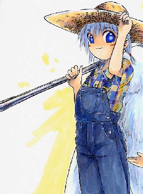
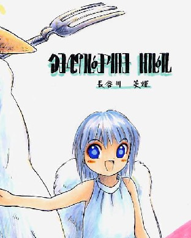
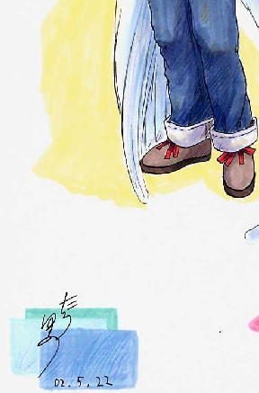
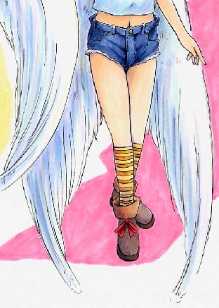
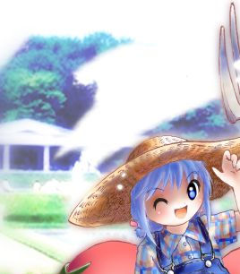
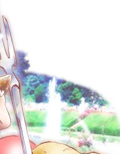
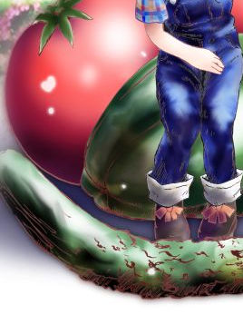
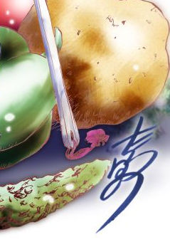

妖精的日常生活
第１２話 収穫祭？
作：ジャージレッド
絵師：田代憂様
−＝−＝−＝−＝−＝−＝−＝−＝−＝−＝−＝−＝−＝−＝−＝−＝−＝−＝−＝−＝−＝−＝−
※ 前回までのあらすじ
異世界の妖精に人間の身体を召喚されてしまい、代わりに妖精少女の身体にされてしまった突然妖精少女の長谷川幹也（みきや）君改め長谷川美姫（みき） ちゃん。妖精の小さな身体で、えんやらやっと頑張ってます。学校にウェイトレスのバイトに大忙しっ！ さらには園芸部夏の収穫際に向けての計画も着々と進 行していくのでした。その計画とは、可愛い美姫ちゃんをマスコットにして、園芸部が作った野菜を超高値で売りさばこうというものだったのです。そしてその 更に先には、経済力による学校の支配へと……。詳しくは『妖精的日常生活 第１１話 ウェイトレス？』までの各話をお読み下さい。<(_ _)>
−＝−＝−＝−＝−＝−＝−＝−＝−＝−＝−＝−＝−＝−＝−＝−＝−＝−＝−＝−＝−＝−＝−
「よーし、長谷川さん。いいよ。目線こっちね。あっ、その表情いいね。ちょっと照れてるところが可愛いよ」
放課後、園芸部が管理している学校裏の広大な畑の中、ワタシはブロマイド写真を作る為のモデルになっていた。今日の撮影テーマはトマトの収穫。時期的にはちょっと早かったのか、まだまだ青さが残っているトマトが多い。しかしその中でも、なんとか比較的赤く熟れたトマトを選んで摘み取り、地面の上にピラミッド状に積み上げてある。そのトマトを前にしてカントリーなオーバーオール姿のワタシがフォークを持ちポーズを取っている。我ながら、「可愛いかも？」と思っちゃったりなんかする。
もちろん写真を見た人が、ひとめでワタシのことを妖精だと分かるように、真白い天使のような鳥の羽は背中から出したままだ。もうどこからどうみても完璧に妖精のカントリーガール。農作業にいそしむ姿が美しい……、のかな？
しかし、照れる。園芸部と写真部、さらには新聞部のみんなが見てる中で写真のモデルになるのは恥ずかしい。スカートじゃないボーイッシュな装いでも恥ずかしさを感じるとは予想外だったよぉ〜。恥ずかしくて今すぐにでも飛んで逃げて行っちゃいたいぐらい恥ずかしい。でもそれをしないのは報酬として撮影に使った妖精用の服を、現物支給でもらえるからだ。妖精の服はとても高いので、いくら恥ずかしくてもみすみすこのチャンスを逃す訳にはいかない。ワタシって耐え忍ぶ妖精少女？
「こ、こうですか？」
写真部の太田龍次（おおた・りゅうじ）部長の指示を受けて、目線をカメラの方に向けるワタシ。無理して演技しなくても、これだけの視線にさらされていたら嫌でも照れちゃうよ。もう、恥ずかしい。
「いいねえ。じゃあ次は積み上げられたトマトに可愛くキスしてみよう。大地の恵みに感謝する妖精。いいよ。これは受けるっ！ うーん、そうだな、フォークはトマトの横の地面に突き刺しておこう」
言われるままに、ワタシはこのためだけに用意されたフォークをトマトの横の地面に突き刺した。良く耕されている畑の土は軟らかく、非力な妖精でも簡単にフォークを突き刺すことが出来た。さすがに全国一の園芸部を自認するだけはある。これが普通の高校の園芸部だとこうはいかない。手入れの行き届かない畑には雑草が生い茂り、土も固くなっていることが多いらしいけど、ここ、県立緑ヶ丘高校園芸部の畑は、並みの農家の畑よりもずっと広いし人手もかけているのだもんね。すごいでしょっ！
「あのぉ〜、トマトにキスって、どんなふうにすればいいんでしょうか？」
フォークを地面に突き刺したワタシは、そのままトマトの山に向き直ったのだが、そこではたと動きがとまってしまった。人間のときだったらトマトを素直に手に取ってキスが出来るのだが、妖精のサイズでは、ちょっと無理だ。
「とりあえず適当にやってみよう。そうだな、積み上がったトマトの頂上、一番上に乗っているトマトにキスしてみよう」
カメラのファインダーを覗きこみながら指示をする写真部の部長。ほんとに良いのかな、適当で？ まあ、やれと言われたらやるけど、トマトはピラミッド状に積み上げられているから、一番上にあるトマトと言えば、ワタシの身長とほとんど同じ高さにある。高さは良いのだが、問題は下にあるトマト達だ。
「でも太田部長、一番上にあるトマトにキスをするって言っても、トマトに登る訳にはいきませんよ。園芸部員が丹精込めて作ったトマトなんですよ。それを足蹴にするようなことなんて。ねえ、山口部長」
この場で一番偉い（ということになっている）園芸部の山口部長に、ワタシは助けをもとめた。だって、ここでトマトを踏んづけたりしたら、いくら妖精の体重ではトマトは潰れないとはいっても、園芸部員の非難を浴びることは確実なんだもん。まったく写真部の太田部長も無茶を言うよね。
「長谷川……。お前、自分が妖精だってことを忘れてないか？」
それまでじっと撮影風景を見ていた山口部長は、ちょっと呆れたように口を開いた。もう、なんでそんな疲れたような声を出すんですか？ ワタシのほうがずっと疲れているのにっ！
「忘れてませんよ。妖精のサイズじゃトマトを手に取ってキスできないから、困ってるんじゃないですか」
気持のイラツキがそのまま口調に反映して、ちょっとぞんざいな物言いになっている。あやや、少し反省。
「鏡子君。どうやら長谷川は忘れているようだから、思い出させてやってくれ」
やれやれと言わんばかりに頭を横に振ると、園芸部副部長にして人間では唯一の女子部員である鏡子先輩に指示をする山口部長。もう、さっきから何だって言うのさっ！
「コホン……。美姫ちゃん。あのね、美姫ちゃんの背中にある物は何かな〜？」
小さな子供を相手にするような鏡子先輩の言い方。顔もニコニコとまるで幼稚園の先生だ。おまけに右手の人差し指を立ててちょっと傾け、顔までそれにつられて傾いている。妖精は小さくたって子供じゃないのに、どうしていつもちっちゃな子供扱いされなくちゃいけないんだろう？ いくら鏡子先輩だからって、怒っちゃうんだからね。もうっ、ぷんぷんっ！！
「もう、羽に決まってるじゃないですか。それよりも子供扱いしないで下さい。こう見えても中身はちゃんとした高校生なんですからね。バカにしないでください」
子供扱いされたことに怒ったワタシは、失礼にも先輩に対してタメ口をきいてしまったのだが、それにも気がつかないほどプンプンしていた。バイトでは“妖精さんスペシャル”で、わざと子供っぽい演技をしているワタシだが、その反動もあって普段から子供扱いされるのは、ちょっと嫌なのだ。分かってくれる？
「ごめん、ごめん。そうよね、美姫ちゃんの背中にあるのは、羽よね。うんうん、分かってるのよ。で、私が言いたいのは羽があればふわりと飛んで、積み上げられたトマトの一番上に空中からキスをすることが出来るんじゃないかな？ ってことなのよ」
あくまでも小さな子供に諭すような口調で優しく話す鏡子先輩。
「あっ！」
というわけで、ひとこと叫んで言葉を失ってしまったワタシだった。それにしても、……ワタシって、そんなに子供っぽいのかな？ 本来なら１年しか違わない鏡子先輩は、こんなにも大人っぽくて、今は妖精少女になってしまったワタシから見ても不思議な色っぽさが感じられるのに、一方のワタシは……。あ〜あ、なんだかちょっと、うらやましいかも。
「美姫ちゃん。しっかり♪」
楽しげな鏡子先輩の声を受けたワタシは、写真部の太田部長の指示通り、積み上がったトマトの一番上に空中からキスをしたのだった。というわけで撮影は順調に進んだのだが、恥ずかしさの為にトマトよりもよりも赤いほっぺたをしていたかもしれない。ううう、自分が飛べることを忘れちゃうだなんて。
 |
 |
|
 |
 |
「どうだろう、太田部長。長谷川もずいぶんと疲れているみたいだし、ここはひとつ今日の撮影は終了ということにしては……」
トマトにキスするシーンの撮影が終わった後、ワタシが、『自分は空を飛ぶことが出来る妖精だ』ということを忘れてしまうぐらい疲れているのを見た山口部長は、写真部の部長に撮影の中止を申し出た。さすが緩急を使い分けることを心得ている山口部長だ。もっとも別な言い方をすれば、限界の直前まで人をこき使うということに他ならないのだが……。学校に部活にバイトじゃ、もうヘロヘロです。
「そうだな。やっぱり長谷川さんの魅力は、ちっちゃいのに元気でけなげなところだから、確かに今の状態なら撮影はやめたほうがいいかもしれないな」
まあ、しかたがないか。という口調で早くも撮影機材を片付けだす太田部長。その他の写真部の部員たちもそれを手伝いだした。やれやれ、今日はバイトが休みの日だからといって撮影が長時間にわたったからホントに疲れたよ。
「すみません。ちょっとよろしいですか？」
やっと休めると思ったのも、つかの間、鏡子先輩が山口部長と太田部長の２人を呼び止めると、ひそひそと何かを相談し始めたのが見えた。なんだろう。まだ何かあるのかな？ う〜む、妖精使いの荒いこと。もうくたくたですよぉ〜。
「なるほど、それはいい。用意さえ出来ているなら今日中にその撮影を済ませてしまうほうが良いかもしれんな。いや、むしろ長谷川が疲れきっている今が、その撮影には絶好のチャンスかもしれないぞ」
しばらくごそごそと相談していたかと思っていたら、山口部長がワタシのほうをチラリと見ながら結論を口にした。うぇ〜ん、ないしょ話をしているつもりなんでしょうけど聞こえてますよぉ〜。疲れてるのに、まだ撮影をする気なんだろうか？ ほらほら、それに太田部長以下写真部の面々が、しまいかけた機材をまた出し始めたよ。あ〜ん、撮影続行確実なのね（泣）。
「はい。こんなこともあろうかと、用意だけはちゃんとしてありましたので」
山口部長の言葉を受けてそう言った鏡子先輩は、ワタシのほうを振り向いてニコリと笑った。そして、おいでおいでとワタシを手招いたのだった。はいはい、分かりましたよ。う〜ん、笑顔がひきつるかも。
「美姫ちゃ〜ん、ちょっと来てくれる？ 今日最後の撮影をしちゃいましょう」
やれやれ、でも最後の撮影って、いったいどんな撮影なんだろう。それにワタシが疲れきっているほうが都合がいいだなんて。なんだか不安……。
「は〜い、今、行きま〜す」
まあ、とにかく早く終わって欲しいから、行きますか。
◇ ◆ ◇ ◆ ◇ ◆ ◇ ◆ ◇ ◆ ◇ ◆ ◇ ◆ ◇ ◆ ◇ ◆ ◇ ◆ ◇ ◆ ◇
「じゃあ、まずは着替えましょう」
ワタシをつれて北校舎の使われていない教室に入り込んだ鏡子先輩の第一声がそれだった。ちなみに手には園芸部の部室から持ってきた、何やら荷物の入ったバッグをぶら下げている。それにしてもこの教室、布団が一組敷いてあるけど何だろう？ いや、答えは分かっている。きっと一緒にね、寝るんだよね……。鏡子先輩と一緒に……。そういえば妖精になってから女の子達に『色々とかわいがられて』いるけれど、まだ一緒に寝たことはなかったったけ。いやいや、そんなことを期待しちゃダメだ（汗）。
「えっ、着替えって……」
訊かなくても、これから何があるのかは完全に分かっているのだけれど、照れ隠しもあって知らないふりをして尋ねるワタシ。ああ、自分でもカマトトだと思うよっ！ でもしょうがないじゃい。待ってました♪ とばかりにほいほいっと脱ぐわけにはいかないでしょ？ ああ、でもそんなことよりもなんだか本当に寝たい気分。疲れちゃって頭がうまく回らなくなって来ちゃったよ。うにうに。
「やぁねぇ〜、覚えていないの？ 園芸部の合宿シーンという設定で撮影するから、パジャマも買ったでしょ。ほら、これよ。結構かわいいでしょ？」
バックから取りだされたそれは、確かに妖精サイズのパジャマだった。全体はピンク地で、所々に黄色い花が描かれている。良く分からないけど、これはもしかしてヒマワリ？ もしかして流行なんだろうか？ でも確かに今の私が着たら結構似合いそうな……。
「確かにかわいいけど……、って！ あわわっ、鏡子先輩まで服を脱いじゃうんですか！？」
なんと手渡されたパジャマをワタシがしげしげと見ている間に、鏡子先輩はするすると制服を脱いでいた。まずはスカートのホックを外してファスナーを下げると、２本のすらりと伸びた、それでいてもちっとした肉感の足を抜き取ったのだ。ふとももが、ふとももがまぶしいっ！
「当たり前でしょ。服を脱がなくてどうやってパジャマに着替えるのよ。はは〜ん、覗かれることを心配しているのね。大丈夫よ。窓にはカーテンがしてあるし、写真部の人達には廊下で待ってもらっているから」
そのまま今度は、園芸部でいつも土いじりをしている手とは思えないような細く伸びた白い指でブラウスのボタンをひとつずつ外す鏡子先輩。あわわわ、胸が、ブラジャーが見えちゃうよ。大きくて触るとふにょんっ♪ っていいそうな胸が。
「そうじゃなくて、目の前でワタシが見ているんですけど……。今はこんなですけど、一応この前までは男だったんですよ。ワタシは」
ああん、目を、目をどっちに向けたらいいんだろう。鏡子先輩にはワタシが見ていて恥ずかしくないんですか？ なんて言っているけど、実は恥ずかしいのはワタシのほうなんだよね。既にお母さんや珠美香の裸を見ているワタシだけど、他人の裸はなんだかそれよりもずっと恥ずかしい。体育の時間はワタシもクラスの女子と一緒の部屋で体操服に着替えるんだけど、そのときだって実は部屋の隅におかれた掃除用具が入ったロッカーの上でこそこそと着替えていたから、まじまじと女子の着替えを見たことが無かったのだ。……だって女の子達の手が届くところで一緒に着替えると絶対おもちゃにされそうなんだもん。
「なんでって、今度の撮影には私も参加する予定だからよ。園芸部の合宿の夜の１コマ♪ 私と美姫ちゃんがバジャマ姿で寝ているところを撮影するの。だから私もパジャマに着替えているんだけど、何かおかしいかしら？」
あまりにもあっけらかんとした鏡子先輩の言い方に、ワタシもそれ以上言葉を続けることがうまくできなくなってしまった。う〜ん、確かに今のワタシは、あまりにも可愛らしい妖精少女。そんなワタシを前にして、女性としての羞恥心を持てということを鏡子先輩に期待するのが間違っているのかもしれないけど、でも、やっぱりなんというか、鏡子先輩自身は恥ずかしくなくても、ワタシのほうが恥ずかしいから何とかして欲しい。そんな気がする今日この頃……。
「おかしいですよ。それ……」
ワタシは多くを語らず、人差し指を立てた右手を鏡子先輩の胸へと、すっと伸ばした。しかし……、それにしても大きいっ！ 人間と妖精という違いはもちろんあるわけだけど、ワタシの小さな胸とはボリューム感がまったく違う。うう、なんで半月前まで男だったワタシが胸のことなんかでコンプレックスを感じなくちゃいけないんだろう？ そりゃあ男は男らしく、女は女らしくあった方が何かと得だよ。ここしばらくの喫茶店のバイトでそれを痛感したから、妖精少女のワタシはより妖精少女らしくあろうとする意識が芽生えているのかもしれないけど。……もうっ！ 自分でも順応しすぎかもしれないと思っちゃう。ああ、なんだかなあ、鏡子先輩の胸を見ていると、男としての恥ずかしさと、女としてのコンプレックス混じりの恥ずかしさと、２重の意味で目をそらしたくなるかも。
「ああ、そうね。美姫ちゃん、ありがとう。確かにパジャマの下にブラジャーをつけて寝るのはおかしいわね♪」
−＝−＝−＝−＝−＝−＝−＝−＝−＝−＝−＝−＝−＝−＝−＝−＝−＝−＝−＝−＝−＝−＝−
※ 作者の独り言……
実際の女の子たちは、夜寝るときパジャマの下にブラジャーを着けているのだろうか？ それとも着けない派と着ける派に分かれていたり、はたまた気分によって着けたり着けなかったりするんだろうか？ はなはだしく疑問である。前に何かで読んだ本によると、胸が日に日に大きくなる成長期の段階では成長を阻害しないよう締め付けないようにすることが大事なので着けないほうが良くて、成長期を過ぎて形崩れを心配しなければならなくなってきたら着けたほうが良いということだったが、その知識は本当だろうか？ どうでも良いけど気になる疑問である。(^^)
−＝−＝−＝−＝−＝−＝−＝−＝−＝−＝−＝−＝−＝−＝−＝−＝−＝−＝−＝−＝−＝−＝−
先ほどのワタシの言葉を意図的に誤解したのかどうか知らないが、鏡子先輩はそう言うと、両手を後ろにまわして、あっという間にブラジャーのホックを外してしまった。そして、そのまま肩ひもをするりと外すと、ワタシの目の前には桜色をした乳首をそれぞれの頂上に頂いたふたつの大きな山が横向きにそびえていたのだった。ゆ、ゆれてますよ。胸がゆらんゆらんと……。妖精少女のプチパイな胸ではこうはいかない。まったくホント、すごい迫力っ！
「うわわわわっ！」
前を隠してもらうことを期待していたのに、鏡子先輩の行動は、予想とはまったく逆だった。というわけで、うろたえた声を上げることしか出来ないワタシだったのだが、その反応を見て、鏡子先輩は思いっきり楽しんでいるようだ。ひどくおかしそうにしながら笑いをこらえている。ううう、いたいけな妖精少女をつかまえて遊ばないで欲しい。
「うふふ、興奮する？」
いつもの落ち着いた雰囲気はどこへやら、鏡子先輩は大胆にも上半身裸のまま、胸の前で軽く腕を組んで、ぷるるんっ♪ と揺れる大きな胸を自然に持ち上げた。な、なるほど……。胸の大きさって服の上から見ただけじゃ正確には分からないものなんだ。大きいとは思っていたけど、鏡子先輩の胸がこんなにも予想をはるかに超えて大きかったなんて。……知らなかった。メモしておこう。
「こ、興奮なんてしませんっ！」
裏がえった声を出してしまったが、興奮していないというのは本当だった。確かにドキドキと心臓が脈打っているけど、単にそれだけだ。ちっともエッチな気持にはならない。どちらかと言えば、突然のことに驚いてドキドキしているというところだろうか？ その証拠に、その、えっと……。股間にはなんの反応もない。もちろん女の子としての反応だからね。元は男だったワタシだけど、健全な男子高校生なら１７歳ともなれば、女の子が性的に興奮するとどうなるのかはちゃんと知っていると思う……。
「でも、顔が赤いわよ。それに美姫ちゃんって、男の子がどういうふうに興奮するかは知っていても、女の子が興奮するとどうなるかは知らないんじゃないのかしら。それとももう身体で知っちゃったのかな？」
そう言いつつ、鏡子先輩は、カバンの中から白い無地のＴシャツを取り出した。
「し、知ってますよ。それぐらい。本で読んだだけですけど……」
たった今考えていたことを見透かされたようで、ワタシはますます顔を赤くするのだった。しかし『本で読んだだけ』とは言ったものの、妖精少女になって初めてお風呂に入ったときに妹の珠美香にされたことを思いだしてワタシは言葉を濁すのだった。ううう、確かにあの時は女の子として性的に興奮していたと言えば言えなくも無いけど、あれはちょっと違うような気がするし……。いったいホントのところはどうなんだろう？
「本で読んだだけなの？ ホントに？ ……まあいいわ。秋まで待てば、美姫ちゃんが女の子として興奮するところを見ることが出来るわけだし、今はそのドキドキした赤い顔だけで我慢してあげる♪」
どう答えれば良いんだろうとワタシが迷っていると、鏡子先輩はあっさりとその話題を終えて、そのまま手に持っていたＴシャツを頭からすっぽりとかぶったのだった。白いぴったりとしたＴシャツに収まりきらないおへそと、大胆にさらされた薄ピンク色のショーツが、健康的に色っぽい。もしもワタシがまだ人間の男のままだったら、たまらないシチュエーションなんだろうな。あああ、妄想モードが起動しそう。でもダメっ！ ここでそんな状況になっちゃったら、この場合おもちゃになるのはワタシのほうなんだからね。ふうう、おちつけ、おちつけ、ワタシの心っ！
「あの、鏡子先輩。ち、乳首が浮き出てるんですけど……」
そうなのだ。ワタシだってブラジャーをつけずに、代わりにピタッとしたＴシャツを着ているんだけど、妖精の胸は元々微乳というか、プチパイというか、あんまり膨らんでいないからそれでも別に支障はない。ところが鏡子先輩の胸は一般的な女子高生にしてはとても発育状況が良いので、Ｔシャツの布の下からでも激しく自己主張しているのだ。とにかくすごいんですっ！
「あら、そんなに恥ずかしがらなくても、美姫ちゃんにだって女の子な乳首があるじゃない。それともやっぱり興奮しちゃったの？」
今度は、自分用のパジャマを取りだすと、そのまま動きを止めずにさっさと身につける鏡子先輩。見事な身体のラインが薄い布によって隠されていく。しかし存在感のある胸と腰にはさまれた細いウェスト。そこを覆っている頼りなさげにふわふわと揺れる布が、逆に女性らしい体形を連想させて、色っぽさを強調している。あああ、ワタシの幼児体形とは全然違う……。だからどうだと言うわけじゃ無いんだけど。
「だから興奮はしませんってばっ！ 少なくとも秋までは……」
言葉を濁すワタシ。そうなのだ。秋、それは年に２回ある妖精狂いの季節のうちのひとつ。いわゆる発情期が存在する妖精は、人間とは違って年がら年中発情するようなことはない。あくまでも春と秋の、発情期。つまり妖精狂いの季節にしか発情しないのだ。
「そうそう、春と秋の妖精狂いの季節にならないと妖精さん達は、エッチな気分にならないのよね。Ｔデパートにある『妖精郷の雑貨やさん』って店の妖精の店員さんがそう言っていたわ」
続いてパジャマの下に足を通す鏡子先輩。半裸の状態から服を着ていくのは、服を脱ぐのとはまた別な色っぽさがあるような、ないような。
「えっ！ 大島さんに会ってきたんですか?」
そんなに日にちが経っていないのに、なんだか急に大島さんのことが懐かしくなったワタシは、驚きの声をあげてしまった。大島さん、今日も明るく元気に働いているんだろうな。もともとは男の人だったけど女の妖精になったというところがワタシと同じ境遇で、ちょっと親近感が湧くんだよね。
「ええ、大島眞利菜（まりな）さんって方よね。もちろん会ってきたわよ。うふふふ、美姫ちゃんのことを色々と聞いてきちゃった♪ お腹を壊し過ぎてオムツをしてたことなんていう、まあちょっと恥ずかしい話なんかもこっそりとね」
すっかりとパジャマを着終わった鏡子先輩は、普段の様子とはちょっと違って、くすくすと笑いながらそう言った。もお〜っ！ 大島さんったら、そんなことまで言うなんて……。今度会ったら文句を言わなくちゃ。
「言わないで下さい。いくら鏡子先輩だからって怒りますよ。それに召喚されたばかりの妖精は、だいたいみんな食べ過ぎてお腹を壊しちゃうのが普通なんですよ。大島さんだってお腹を壊したって言ってましたから、ワタシだけのことじゃないんですよ」
まったくもうっ！ 大島さんも大島さんだよ。お客さんの個人情報をそんなにもぺらぺらとしゃべっても良いわけないだろうに。それともやっぱりあれなんだろうか。基本的に思ったことをすぐ口に出しちゃうという妖精の性質上、妖精に職業上の守秘義務を求めること自体が無理なのかな。
「ごめん、ごめん。でも、大島さんからは、美姫ちゃんがすごい妖精だって話も聞いてきたわよ。普通の妖精さんは、召喚されてすぐには羽を出せないのに、美姫ちゃんはいきなり羽を出すことが出来たっていうじゃない。大島さん、本気で驚いていたんだから」
う〜ん、そうなのか。直接そう言われたときは、お世辞でも混じっているのかと思っていたけど、鏡子先輩にも同じことを言うなんて、ホントのホントにすごいことなんだ。そうか、ワタシってすごかったんだ。なんだか照れちゃうな。
「でも結局は、みんな羽を出せるようになるわけだし、ちょっとばかり早く羽を出せただけですよ。まあ、それでもすごいことはすごいのかもしれないけど♪」
自分の感情には嘘をつけない妖精の性質だからだろうか、謙遜しようとしていたのに、ついつい最後は自慢口調になってしまったワタシだった。気をつけねば……。こんな性格じゃ、いつか失敗しそうだよ。
「あらあら、美姫ちゃんってば可愛いわね」
ワタシのちょっと自慢が混じった言葉を聞いて、鏡子先輩は笑顔を浮かべた。何？ 何かおかしかったのかな？
「可愛いって、何がですか？」
そのまま疑問を口にする。可愛いと言われることにはもう慣れたけど、この状況でワタシの何が可愛いんだろう。
「ちっちゃな子供が、何か出来たことを一生懸命自慢するみたいで可愛かったのよ。私には、４才のいとこがいるんだけど、ちょっと誉めるとすぐに、舞い上がっちゃうのよね。なんとなく今の美姫ちゃんを見ていたら、それを思いだしちゃったの」
ふふふと思いだし笑いをしながら、鏡子先輩はてきぱきと脱いだ制服をきれいに折りたたんでいく。へええ、女子の制服というか、スカートってあんなふうにたたむんだ。参考になるなあ。もう一回メモしておこう。……めもめも。
「もう、鏡子先輩。ワタシを４才の子供といっしょにしないでくださいよ。妖精はちっちゃくても子供じゃないんですからね」
ぷんすかしながら抗議するワタシ。ほっぺたもふくらんじゃってます。
「あら、そんなつもりはこれっぽっちもないわよ。でもね、美姫ちゃん。美姫ちゃんが子供じゃなくて大人なら、もう着替えぐらいとっくの昔に終わっていると思うんだけど、それって私の思い違いかしら？ 私はもうちゃんとパジャマに着替え終わっているのに、美姫ちゃんたら、まだバジャマを抱えたまんまなんだもん。早くしないと部屋の外で待っているみんなが待ちくたびれちゃうわよ」
口調は完全に保育園の保母さんな鏡子先輩。ううう、つい鏡子先輩の着替えに見とれて……、じゃない。つい話に夢中になっちゃって、着替えするのを忘れてしまったよぉ〜。
「ああっ！ ごめんなさい。今、着替えますっ！！ うわわわわっ！ きゃ〜〜〜っ！」
そのまま私はカントリーなオーバーオールを脱いで、バジャマに着替えようとしたのだが、慌てていたので、空中に浮いたまま、オーバーオールを脱ごうとして……。結果、羽と足がそれぞれ服にもつれて、ひゅうぅぅぅぅぅぅん。ぽてっ！ と、墜落してしまった。あ〜ん、こんな失敗をするなんてっ！
「きゃっ！ 美姫ちゃん大丈夫！？」
鏡子先輩が、心配そうに声をかけてくれた。しかし幸いにも敷いてあった布団の上に落ちたので、そんなに痛くもなく、怪我もせず、ワタシは無事だった。少なくとも身体のほうは。
「大丈夫ですよ。ちょっと目が回っただけです」
なんだか頭がふらふらするけど、特に問題はないもんね。あやや……。立つに立てない。足がふらつくよ。
「駄目よ、そんなにふらついているじゃない。いいからそこに寝てなさい。私が着替えさせてあげるから♪」
そしてそのままワタシは、鏡子先輩のなすがままに、生きた着せ替え人形と化したのだった。あうっ！ 着替えさせてくれるのはいいんだけど、そんなとこ触っちゃっ！ ああっ！！
「はいっ♪ 終了。これでいいわよ。やっぱり美姫ちゃんって何を着せても似あうわね。ほら、見てみる？」
そしてバッグから手鏡を取り出し、ワタシの前に差し出す鏡子先輩。確かにその手鏡には、いつもとはまた違ったワタシがいた。う〜ん、鏡から目が離せません。
「パジャマ姿もいいかも……」
思わずそんな言葉が口から出てくるのを、ワタシは止めることができなかった。バイトに園芸部の活動に疲れきったワタシのけだるい表情ですら、パジャマに身を包むとそれはそれで可愛く見えるから不思議だ。もしも今夜、このバジャマ姿を家族に見せたらどうなるんだろう？ ちょっとだけ心配かも。“逆すりすり”されそう。
「さてと、じゃあ、着替えも終わったし、廊下で待っている人達を呼びましょうか。いい？ これがホントに今日最後の撮影だから頑張ってね。じゃあ、私はみんなを呼んでくるから、美姫ちゃんは布団の上で撮影の準備をしておいてね」
そのまま鏡子先輩は教室から廊下に出ると、山口部長や太田部長をはじめとする写真撮影スタッフを呼びにいったのだった。ふうう、ようやくこれで最後か。今日もハードだったなあ。
「鏡子先輩ったら、『美姫ちゃんは布団の上で撮影の準備をしておいてね』って言っていたけど、とりあえずこの布団に寝ておけばいいのかな？」
というわけで、布団の上に横になり、色々とポーズを考えてみたワタシだったのだけど……。ああ、なんだかこのふかふかの布団に身体が吸い込まれそう。ちょっとだけホントに寝ちゃっても良いかな？ 良いよね？ 少しなら。
◇ ◆ ◇ ◆ ◇ ◆ ◇ ◆ ◇ ◆ ◇ ◆ ◇ ◆ ◇ ◆ ◇ ◆ ◇ ◆ ◇ ◆ ◇
「ああ、今日もこんなに遅くなっちゃった。せっかく今日は瀬里佳でのバイトが無い日だったのに、結局、同じような時間になっちゃうなんて」
ワタシはもう暗くなった空を、青いオーラの光を曳きながら飛んでいた。学校から家まで直線で帰ることが出来るから、自転車で通うことに比べるとずっと早く帰ることが出来るのだが、問題はそんなことじゃない。
「まったくもう、写真の撮影が終わったのなら起こしてくれれば良いのに。みんな薄情なんだから」
そうなのだ。ふかふかの布団に横になったワタシは、そのまますぐに眠ってしまったのだ。まあそれだけなら良いのだけどすべての写真撮影が終わっても、ワタシを起こしてくれなかったのだ。まったくひどいよねっ！ そしてふと気がつくと既に午後７時台も終わりかけていたと、そういうわけなのだった。自由な時間を寝て過ごしちゃうなんてなんかもったいないと感じるのは、ちょっと悲しい。
「まあ、あのまま教室に置き去りにされなかっただけマシだと思わなければいけないのだろうけど……」
ワタシが鏡子先輩とひとつの布団で寝ているツーショット写真を撮り終わったとき、ワタシのあまりにも可愛い寝姿に、みんながワタシを起こすのをためらったらしい（ホントかな？）。というわけで、ワタシは眠ったまま鏡子先輩の家に連れていかれて、さらにそこで1時間半ほど眠り続け、ようやくさっき起きたばかりなのだ。ふぁ〜、頭の芯がだるい〜。
「鏡子先輩、家にはちゃんと電話しておいてあげるからと言っていたけど、みんな心配してないかな？ ……それにしてもお腹が減ったなあ。こんなことなら鏡子先輩の言葉に甘えて、何か食べてくれば良かったかも」
もうすぐ夏とはいえ午後も８時をまわると、既に空も暗くなっている。これだけ暗くなると妖精の天敵であるカラスもいなくなるので、夜に空を飛ぶのは思ったほど危険ではない。しかし時々近くに寄って来るコウモリは、ちょっとうるさい。何もうざったいという意味ではなく、本当にうるさいのだ。キーンと高いコウモリの声が頭に響いて、くらくらする。ああ、ホントにうるさい。
「妖精の耳って、人間には聞こえない音も聞こえるんだな。コウモリが出す超音波の声まで聞こえちゃうだなんて」
特に誰に話すということもなく、ぶつぶつと呟きながらワタシは夜道ならぬ夜空を急いだ。ええい、コウモリなんかぶっちぎっちゃうぞ。スピードアップだっ！ ぎゅんぎゅーーんっ！
「やっぱり今はこんな姿をした妖精少女だけど、やっぱり俺って男だよなあ。高速飛行って、なんか燃えるぜ」
まわりに誰もいない気安さから、ワタシは久しぶりに自分のことを【俺】と言ってみた。しかし【ワタシ】と言うのに慣れてしまったのか、【俺】と言ったときに、どうにも妙な違和感を感じて、ワタシはちょっと意外な気がした。
「最初は、無理して【ワタシ】と言っていたけど、なんだか今となっては自然に【ワタシ】と言っちゃうなあ。人間って、こんなにも早く新しい状況に慣れてしまうものなのかな？」
−＝−＝−＝−＝−＝−＝−＝−＝−＝−＝−＝−＝−＝−＝−＝−＝−＝−＝−＝−＝−＝−＝−
※ 作者よりひとこと……
基本的に人間って状況に慣れてしまう存在だと思うのです。女の子になったとき、それまでの習慣どおり『俺』とか『僕』を使い続けるとそれに慣れて『俺っ娘』や『僕っ娘』になり、思い切って『私』を使いだせばすぐにそれに慣れると思うわけです。というわけで【教育】次第では、どんな人称でも思いのままのような気が……。個人的には自分の名前をそのまま人称に使うのが好みだったりする。『ふ〜ん、美姫ちゃんはどうでもいいと思うけどな』とかね♪ ああ、いいなあ。(^^)
−＝−＝−＝−＝−＝−＝−＝−＝−＝−＝−＝−＝−＝−＝−＝−＝−＝−＝−＝−＝−＝−＝−
ワタシは、しばし思索の海に沈みつつも、家に向かって、ぎゅんぎゅんと夜空を駆け抜けた。やっぱりスカートで空を飛ぶよりも、オーバーオールで空を飛ぶほうが下半身を気にしないでおけるだけ、速く飛べるような気がするなあ。まあ、気のせいかもしれないけど。
「あれ？」
そうこうしているうちに、家についたワタシは、見なれぬ白のワゴンタイプの車が停まっているのに気がついた。もう暗いので良く分からないが、それなりにきれいに洗車がしてあるみたいだ。もっともあちこちぶつけて細かなへこみだらけだけど。いったい誰の車だろう？
「ただいまーっ！ 遅くなっちゃった。ご飯、残ってる？」
玄関の扉の上のほうに作られた妖精用の出入り口を通って家の中に入ると、まずは出来る限り大きな声で『ただいま』の挨拶をした。ちょっと寝たおかげで、元気はいっぱいだ。もちろん胃腸も元気いっぱいに、『ぐう、きゅるるるる』と自己主張をしているのは言うまでもない。
「あっ、美姫ちゃん、おかえりなさい。お客さんがいらっしゃってるわよ。お父さんの会社の人なんだけど、美姫ちゃんにどうしても会いたいんですって」
台所から出てきたお母さんは、そう言うと、居間のほうを指差した。ううう、晩ご飯はお預けなの？ 何かいい匂いがするんですけど？
「しょうがないなあ。お腹空いてるのに」
小さく呟くワタシ。その声が聞こえたのか、タイミング良くお母さんが手に持っていたおにぎりを渡してくれた。もちろん小さな妖精サイズのおにぎりだ。ああ、よだれが……。
「お客さんとの話が長くなるといけないから、とりあえずこれだけ食べていきなさい。何も食べないよりは良いでしょ？」
にこりと微笑んだお母さんの笑顔は、まるで女神様だった。五穀豊穣の女神様かな？
−＝−＝−＝−＝−＝−＝−＝−＝−＝−＝−＝−＝−＝−＝−＝−＝−＝−＝−＝−＝−＝−＝−
※ 作者よりひとこと……
コンビニのおにぎりは海苔がパリパリとしていておいしいけど、家で握ったおにぎりもおいしいですよね。暖かいご飯に、湿気でしっとりとした海苔が貼りついたおにぎりというのも、意外とまた良いのではないでしょうか？ それに具や海苔すら無くて単純に塩で味付けたご飯を握っただけのおにぎりというものも、おいしいと思えるのです。まあ、おいしく頂くには炊きたての熱いご飯を使って握る必要がありますが、乾いたコンビニのおにぎりには無い、粘り気のあるご飯のおいしさを味わえること請け合いです。(^^)
−＝−＝−＝−＝−＝−＝−＝−＝−＝−＝−＝−＝−＝−＝−＝−＝−＝−＝−＝−＝−＝−＝−
「ありがとぉ〜っ！ いっただっきまぁ〜すっ♪」
空中をパタパタと飛びながら、はぐはぐとおにぎりにかぶりつくワタシ。いくら妖精サイズのおにぎりとはいえ、人間サイズにひき直せば、ゆうに顔の半分ほどもあるおにぎりだ。しかしワタシはその大きさのおにぎりを、一気に食べてしまった。
「ごちそうさまでしたっ！」
そのまま、居間に行こうとしたのだが、ちょっと待ちなさいと、お母さんに止められてしまった。
「せっかくの新しい服に、ご飯粒がいっぱいついているわよ。ほら、ほっぺたにも」
お母さんは左手で優しくワタシの身体を掴むと、右手で丁寧に服についたご飯粒を取ってくれた。そしてほっぺたについたご飯粒はというと……。
「ちゅっ♪」
ワタシのほっぺたに、口をつけてご飯粒を取ってくれたお母さんだった。これが数週間前までのようにワタシが男の子のままだったら恥ずかしくて赤面しまくりだったのだろうが、妖精少女になってしまった今となっては、ちょっとくすぐったいけど、お母さんの愛情が素直に感じられて、とっても嬉しかったりする。……ホントだよ。
「ありがと♪ お母さん」
別にいいのよ、と答えたお母さんは、そのまま居間のふすまを開けるとワタシを連れて中に入り、待っていたお客さんとその相手をしていたお父さんに、ワタシが帰ってきたということを話したのだった。
「お待たせしました。美姫が帰ってきました。……美姫ちゃん、こちらは、お父さんの会社の方で、剣持道彦(けんもち・みちひこ)さん。何か、美姫ちゃんに大事な用事があるそうなのよ」
なるほど、お父さんの会社の人なのか。じゃあそれなりの挨拶をしなければ。きっと妖精が珍しいから見に来たのじゃないかな。うんうん、きっとそうだね。よし、ここはひとつ、うんと媚びでも売っておこうかな？
「こんばんは。お待たせしました。長谷川美姫です♪」
喫茶瀬里佳のバイトで鍛えたとびっきりの笑顔で挨拶をする。ふふふ、妖精マニアの人なら、これで撃沈間違いなしだろうな♪
「君が美姫君かっ！ 私は剣持道彦、加賀重工航空機製作所開発部の主任だ。会いたかったぞっ！」
しかし挨拶をしてから一礼し、そして顔を上げた時にワタシの目の前に居たのは……、撃沈されたとろけた笑顔ではなく、マッドサイエンティストだった。
◇ ◆ ◇ ◆ ◇ ◆ ◇ ◆ ◇ ◆ ◇ ◆ ◇ ◆ ◇ ◆ ◇ ◆ ◇ ◆ ◇ ◆ ◇
「剣持主任、うちの息子の幹也です。もっとも今は妖精少女の美姫ですけど。で、幹也、こちらがお父さんの会社の開発部の主任の剣持さんだ。今日はどうしても幹也に協力してほしいことがあるということで、その話をされに来たそうだ」
さすがに落ち着いた雰囲気のお父さん。やはり普段からこの人とは会社で会ってるんだろうな。しかし他人の家にやってくるのに、白衣を着てくるだろうか？ 普通は違うと思う。なのにこの剣持さんってば、当たり前のように白衣を着ている。う〜ん、これひとつとっても変な人だということが分かるのに、この変人に協力しなくちゃならないの？ なんかやだなあ。
「協力して欲しいって、何をですか？」
お客様に対して思いっきり不信感丸だしの声で質問するワタシ。あああ、まだ修行が足りない。ここがもし瀬里佳だったら、由美子さんに思いっきり叱られちゃうところだよ。用心、用心。
「うむ、良くぞ聞いてくれた。協力して欲しいのは他でも無い、これだっ！」
そして確認することも出来ないほどの早業で携帯用のモバイルパソコンをどこからか取りだすと、剣持さんは、あっという間に電源を入れたのだった。妖精にとっては禁断のアイテムであるパソコンの電源をっ！
「やめてくださいっ！ 美姫ちゃんが！」
慌てて、剣持さんを止めようとするお母さん。
「母さん、慌てなくても大丈夫だよ。剣持さんが持っているパソコンは、妖精には悪影響を与えないんだ」
すべての事情を知っているという、落ち着いた声のお父さん。でも、そんな都合のよいパソコンなんてあるの？
「……ホントだ。気持ち悪くない。すごいっ！ どうして！？ ねえ、これってホントに本物のパソコンなの？」
もしかして、本物のパソコンじゃないのかもしれないと思ったワタシは、そう言いながら２〜３度羽ばたき、剣持さんが手に持つパソコンの画面を覗きこんだ。そして剣持さんは、ワタシがそういう反応をすることが分かっていたのか、ワタシが画面を見やすいように傾けてくれた。う〜ん、見た感じではちゃんとパソコンだよね。
「どうだね？ 本物だろ。もちろん、ちゃんとネットにもつなげられる。よし、つないであげよう」
ワタシの返事も聞かずに剣持さんはモバイルパソコンを操作した。ブラウザが起動する画面が現れ、ほどなく正常にネットに接続された。うわぁ〜、ネットを見るのは久しぶりだよ。それにしても……。
「電源の入ったパソコンのそばに寄ると妖精は気絶しちゃうのに。なんで平気なんだろう？」
何も考えられず、ただ呟くワタシ。お母さんも何がなんだか分からないみたい。不思議だ。うにゃうにゃ。
「不思議かね？ そうだろう、そうだろう。妖精はパソコンに弱いと言うのは常識だからな。ところがっ！ 私の開発した方法を使えば、ほら、この通りっ！！ 妖精にまったく悪影響を与えないパソコンを作ることも出来るのだよっ！ とにかく私は天才だからね」
いきなり高いテンションで、説明、いや自慢をし始める剣持さん。とにかく自分はいかに素晴らしいかということをまくしたてる。その勢いには、もう誰も口をはさめません。こんなすごい人、初めて見た。いや、ちょっとだけ園芸部の山口部長に似ていなくもないかな？
「そ、それにしてもすごいですね。妖精にもこれでパソコンが使えるようになるんですね。欲しいなあ、それ……」
人物はともかくその発明品に対しては率直にすごいと思ったワタシは、とりあえずそう相づちを打ったのだった。そして出来るなら、そのパソコン欲しいと思ったのだったが、やはりついその思いが口に出てしまった。それに気づいてちょっと恥ずかしくなっちゃった。赤面です。
「これ、美姫ちゃん。はしたないですよ」
お母さんが、そんなワタシを注意する。お客さんの持ち物をいきなり欲しがるなんて、確かにはしたないね。
「ごめんなさい。剣持さん、つい、思ったことが口に出ちゃって……」
謝りつつも、言い訳をするワタシ。こんな自分がちょっとだけ可愛い♪
「いや、幹也、このパソコンは無理かもしれないが、既に剣持さんからは普通のパソコンの悪影響を消すことが出来る装置を頂いているんだ」
お父さんが、居間の隅にさりげなく置いてある小さな段ボール箱を指差した。何も印刷していない無地の段ボールで出来た箱には、マジックで【試作品第２８号】と書かれていた。あ、あやしい……。
「試作品……」
なんとなく、不安な気持ち。ワタシの声は小さくなった。剣持さんは、協力して欲しいと言っていたけど、もしかして、ワタシってモルモット役なのかな？
「心配することはないぞ。美姫君。私が今手にしているモバイルパソコンに組みこまれている装置は、試作品第２９号なのだが、２８号と２９号の違いは、基本的にその大きさだけだ。試作品２９号は、２８号の回路をそのまま小型化しただけだからな。試作品第２８号は、一世代前の試作品とはいえ、パソコンの妖精に対する悪影響を完全に消すことが出来るのは、既に実証済みだ」
そう言うと、ふんぞりかえる剣持さん。この人には遠慮とか謙遜という言葉は無縁なんだろうか？ お父さんが勤めている会社、加賀重工もなんでこんな人を雇っているんだろう。それともやっぱり天才なのかな。なんとかと天才は紙一重というし……。
「はあ、そうですか。じゃあ、ワタシに協力してくれというのは、この機械のモニターではないんですね」
わけが分からなくなって、首を傾げるワタシ。それを見て、お父さんがゆっくりと説明し始めた。
「最初から説明するとだな、幹也。幹也が妖精に召喚されたことを会社の総務に報告するときに、召喚の時の状況だとか、羽の形や色、そしてどういう状況で羽を出したのかというようなことも併せて報告したんだよ。というか社員またはその家族が妖精に召喚されたときにはそこまで報告することになっているんだ。で、それを報告したら、その日の内に開発部の剣持主任から、より詳しく話を聞きたいと言われて……」
順番に説明を始めたお父さんだったが、そこまで話したところで、剣持さんが後を引き継いだ。う〜ん、しゃべりたがり屋め。
「そこから先は私が話そう。実は加賀重工の航空機部門では、妖精の魔法、具体的に言うなら魔法で空を飛ぶことを機械的に再現出来ないかということを研究中なのだ。その為に、社員やその家族が妖精に召喚されたときには、適性を判断した後で協力を要請しているのだよ。そしてその協力の中で開発されたのが、パソコンを起動しても妖精に悪影響を与えない装置なのだっ！」
そしてまだ手に持っていたモバイルパソコンと、例の試作品第２８号を指差す剣持さん。心なしか白衣のすそがはためいて見えるような気がするのは、幻覚だろうか？
−＝−＝−＝−＝−＝−＝−＝−＝−＝−＝−＝−＝−＝−＝−＝−＝−＝−＝−＝−＝−＝−＝−
※ 作者よりひとこと……
【妖精】に協力を【要請】する。だ、駄洒落だ。それにしても、皆さんのパソコンでは、「Ｙ・Ｏ・Ｕ・Ｓ・Ｅ・Ｉ」または「よ・う・せ・い」とタイピングすると、「妖精」と「要請」のどっちが先に変換されて出てきます？ 他にも「養成」、「陽性」、「溶性」、「夭逝」、「妖星」、「幼生」等がありますが、ちゃんと「妖精」が一番最初に出てきますよね（笑）。私ですか？ もちろん「妖精」が一番最初に出てきますよ。……もっとも会社のパソコンで書類を打っているときに、「要請」と打とうとして「妖精」と出て来ちゃうと、ちょっと焦りますけどね。やはり会社のパソコンを使って掲示板に書き込んだりするのはやめたほうがいいかな。というかやめなくちゃね。(^^;)
−＝−＝−＝−＝−＝−＝−＝−＝−＝−＝−＝−＝−＝−＝−＝−＝−＝−＝−＝−＝−＝−＝−
「じゃあ、ワタシに協力して欲しいというのは、結局何なのですか？」
剣持さんの勢いに押されているのか、お父さんもお母さんも黙っているので、とりあえず質問をするワタシ。あああ、喫茶店での客商売の影響かな、つい場を取り持ってしまう。
「確かにこの装置は素晴らしいっ！ さすがに天才の私だっ！ しかし実を言うとパソコンを起動していても妖精に悪影響を与えない装置の開発は、第１段階にしか過ぎないのだ。第２段階はこれから開発することになるのだが、妖精の魔法を機械的に増幅強化する機械の開発なのだよ。そしてさっきも言ったように増幅した妖精の魔法で空を飛ぶ乗り物を造るのがとりあえずの目的だ。まあ、最終目的は別にあるのだがね。とにかくそのためにはなるべく大きな魔法力を持つ妖精の協力が必要だと思っていたところに、美姫君、君が現れたっ！」
そしてビシッとワタシを指差す剣持さん。うわっ、そんなに期待されても……。
「ワ、ワタシがですか……」
ここまでテンションが高い相手に、いったい何を言えば良いのだろう。ワタシは、戸惑うばかりだった。
「詳しいことは企業機密なので、ここでは言えないのだが、様々な観点から検討して、私の研究には美姫君、君が必要なのだよ。協力してくれるかね？」
そのまま、じっと私の目を見つめる剣持さん。一見すると変な人だけど、その目は純粋だ。なんだかそんな気がする。どうしよう。でもバイトもあるし……。
「妖精にもパソコンが使えるような機械を開発されているのは、とても素晴らしいことだと思いますけど、ワタシはもうバイトとかありますから、時間が……」
やんわりとお断りするワタシだったが、剣持さんはその答えを予想していたようだった。ワタシの答えを聞きながら、うんうんとうなずいている。なんだか、手のひらの上で踊らされているような気がするんですけど。
「そのことなら美姫君、君の父親から話は聞いた。なんでも成り行き上、理不尽とはいえ３００万もの借金があるそうだね」
剣持さんの言葉を聞いて、ふと、お父さんのほうを見ると、片手を顔の前に持ってきて手刀を切り、『すまん』というジェスチャーをしていた。もう、口が軽いんだから。お父さんは〜っ！
「いや、幹也、悪いとは思ったんだが、詳しく幹也のことを知りたいと言われて、つい……。すまん」
謝るお父さん。ちょっと情けないかも。
「お父さんっ！ 何でそんなとこまで言っちゃうかな〜？ ちょっと言い過ぎだよ」
ほっぺたを膨らませ、羽をＶ字型にピンッと伸ばして抗議するワタシ。まあ、本気で怒っているわけじゃないけど。顔もしょうがないなあという感じで笑っているのがその証拠だ。ただ、言われたお父さんはどう答えたものかと戸惑い、しばらくうなった後、ようやく口を開いたのだった。娘（？）に怒られる父親っていうのは、なんだか悲しいね。
「幹也、俺も最初からしゃべるつもりはなかったんだ。でもな、この剣持主任に幹也のことを根掘り葉掘り聞かれて……、気がついた時には、海斗君の話も含めて、ついつい全部喋っていたんだよ」
言い訳にしか聞こえない。というか言い訳だよね。
「長谷川さん、気にしないで下さい。根掘り葉掘り聞きだした私が悪いんですから。……というわけで、美姫君。悪いのは私ということでいいね。だいたい、そのことが今日の話の本題じゃあないわけだし。じゃあ、話をもとに戻そう」
気にするなって……、気にしろよ。とりあえず、お前だけは。お父さんに向かって気のない謝罪をしている剣持さんを見て、ついつい心の中で毒づいてしまうワタシだった。まあ、はしたない♪
「はあ、まあいいですけど」
なんだか騙されたような気もするけど、一応、納得はしておいた。そうでないと話が進まないしね。
「結論から言おう。美姫君。君が召喚されたときの状況、ならびに召喚後すぐさま羽を出せたことから考えて、美姫君の魔法能力は妖精の中でも最高ランクにあると予想されるのだ。その君が私たちの仕事の手助けをしてくれるのなら、君が抱えている借金を肩代わりしてもいいんだが……。どうかね？」
にやりんこと笑う剣持さん。ううう、足元見られてる。完全に足元見られちゃってるよ。確かに喫茶瀬里佳でのバイトも『妖精さんスペシャル』が大好評なのでずいぶんと時給を上げてもらっているけど、それでも残った借金を払うには、まだかなりの時間がかかる計算なのだ。
「美姫ちゃん。とりあえず、お父さんの会社の開発部の方からのお話だから、別に変なところに行くわけじゃないし、剣持さんの仕事のお手伝いをしてあげたらどうかしら？」
今まで黙っていたお母さんが、今までの話を聞きながら考えていたのか、何かを決心したかのような重い口調で話し始めた。なんだかお母さんの表情、いつもと違う。
「お母さん……」
ワタシはというと何でお母さんがそう言いだしたのか良く分からなかったが、お母さんの言葉を聞いたお父さんも納得の表情をしているところからみて、少なくともお父さんはお母さんが何を言いたいのかを理解しているみたい。う〜ん。ワタシをおいてけぼりにして話が進んじゃってるよぉ〜。
「いい、美姫ちゃん。妖精がパソコンに弱いっていうのは、今までの常識よね。でもこれからは違うのよ。剣持さん達が開発しているこの機械が一般にも売りだされるようになったらね。そうなったら妖精さん達はどうなるのかしら？ 美姫ちゃんは分かる？」
いつになく真剣な表情お母さん。本当にこれは真面目な話かも。
「妖精が普通にパソコンを使えるようになるということでしょ。すごいよね。でもキーボードやマウスは大きすぎるかな」
とりあえずワタシに分かる範囲内で答えてみたが、どうやらお母さん達が期待していた答えとは違ったみたい。
「違うの。妖精さん達がパソコンからの悪影響を受けなくなるってことは、妖精は仕事をする上で、人間よりも有利になるってことなのよ。そうですよね、剣持さん」
お母さんは今の話題を剣持さんに振ると、剣持さんがそれに答えるまで、じっとその目を見た。うっ、なんだか妙な緊張感が漂ってるよ。空気がピリピリ。
「さすがですね、やっぱり気がつきましたか？」
しばらく無言でいた剣持さんだったが、やがてため息をひとつつき、その緊張を解いたようだった。ふう、ピリピリした空気がなくなって良かった。
「気がつきますよ。ちょっと考えればね。妖精はパソコンや携帯電話のような機械に弱いですけど、それ以外の弱点ってありませんよね。身体が人間よりも小さいということは、欠点というよりも利点のほうが大きいでしょうし」
ワタシには、お母さんがまだ何を言いたいのかよく分からなかったけど、剣持さんや、お父さんはそれで分かったみたい。う〜ん。
「今はパワーアームのような補助機械を使えるから、力の弱い女性でも昔で言うところの肉体労働が勤まるんだよな。むしろ操縦者が小柄なほうがシステムとしては有利だとかで、パワーアームを使うようなきつい肉体労働は女性の仕事。男性は補助機械を使わなくてもこなせる程度の肉体労働専門っていう感じになってきているからな。妖精が機械の影響を受けないとなれば、肉体労働は妖精の仕事って時代がくるかもしれないぞ」
自分でも半分信じていないのか、ちょっと笑いながらそういうお父さんだったが、それを聞いた剣持さんは真剣な表情で話を引き継いだ。
「そうなんですよ。長谷川さん。妖精がコンピューターに影響を受けないとなれば、妖精の仕事の幅は完全に人間以上になってしまうんですよっ！ これだけ小さくて、しかも飛べるっ！ まだ可能性でしかないですけど、妖精は今のような経済的な弱者から抜け出すことが出来るんです」
そして一息おくと、剣持さんは居間のテーブルの上に置かれた湯飲みを手に取り、既に冷めきっていたお茶を飲み干した。でも、でも、そうなんだろうか？ 今、剣持さんが言ったことって、なんだかものすごく重要なことだよね。
「やっぱりそうですか。妖精がコンピューターの悪影響を受けなくなるという事は、単に妖精がコンピューターを使えるようになるだけではないということですよね」
ちらりと笑顔で私を見てから、期待のこもった声で剣持さんに確認するお母さん。自分のこと以上に真剣になってくれているのは、とっても嬉しい。ありがとね♪
「剣持主任、考えてみれば、今の時代でも人間と同程度の能力を持った人工知能は開発されていないわけだし、各種機械の操縦者として見た場合、小さな妖精っていうのは、かなり貴重な存在なんじゃないですか」
お母さんの言葉を受けて、お父さんがさらに質問を続ける。なるほど、そういうことも言えたりするのか。
「そうですね、操縦者としての観点のみで考えた場合、例えば現状の技術の延長線で考えた話としても、妖精たちほど宇宙飛行士に向いている存在は居ないでしょうね。まず、人間に比べて圧倒的に重量が少ないからロケットエンジンの出力に余裕が出来る。さらに衛星軌道上の無重量状態での移動も、魔法により空を飛べる妖精は、移動用のジェットガンなんか無くても、自由に宇宙遊泳作業が出来るわけですからね。軌道基地の建設作業には妖精はもってこいなんですよっ！」
とりあえずお父さんとお母さんの２人に対して答える剣持さん。最初はおとなしい口調だったのに、最後のほうは興奮して、大きな声になってきている。う〜ん、それにしても、宇宙か……。もしもそれが本当なら、確かにすごいかもっ！
−＝−＝−＝−＝−＝−＝−＝−＝−＝−＝−＝−＝−＝−＝−＝−＝−＝−＝−＝−＝−＝−＝−
※ 作者の独り言……
まだ第1シリーズも半ばなのに気が早いとお思いでしょうが、今の妖精的日常生活シリーズを終えたら、舞台を宇宙に移し、主人公も含めた登場人物も丸ごと入れ替えて、妖精的日常生活ワールドの第2シリーズを始める予定です。その名も宇宙妖精物語（仮）。既に妖精が人間を召喚することは無くなった時代ですが、今度は別な理由で、妖精や人間が【とある条件でランダムに入れ替わる】という形でＴＳする話なのです。ああ、早く書きたいけど、そのためには今のシリーズを終わらせないことには書けない……。ううう、いつになることやら？ (^^)
−＝−＝−＝−＝−＝−＝−＝−＝−＝−＝−＝−＝−＝−＝−＝−＝−＝−＝−＝−＝−＝−＝−
「えっと、剣持さん、今の話って本当なんですか？ 妖精が宇宙飛行士に向いているってのは」
しばらく、みんなの話をただ聞いているだけだったワタシだったが、とうとう我慢が出来なくなって、質問してみた。もしもホントに宇宙に行けるものなら行ってみたいんだもん。だって空を飛ぶだけでもあんなに気持ち良いのに、宇宙にまで出ていったら、どんなに気持ち良いのか想像もつかないでしょ？
「ははは、もちろん本当だとも。美姫君。今はまだ部外者である君には言えないが、私たちは更にすごいことを計画中なんだよ。それこそ妖精の宇宙飛行士なんてめじゃない程のね。そしてその計画を実現する為に、現在、妖精の中でも最も強力な魔法力を持っていると推測されている美姫君、君の力が必要なんだ。……手伝ってくれるね？」
剣持さんの言うことは、ものすごく魅力的だ。妖精に対するパソコンの悪影響を打ち消す装置を開発した実績からして、今計画中の更にすごいことというのも、間違い無く本当にすごいことなんだろう。でも、ワタシにはコウモリ羽をした守銭奴妖精の海斗に払わなくちゃいけない借金（？）があるのだ。すでに残高は２９０万程度に減っているとはいえ、まだまだバイトをやめるわけにはいかない。……もう、海斗のバカっ！ でも、さっき剣持さんは、借金を肩代わりしてくれるって言ってたよね。う〜ん……。
「剣持さん、お手伝いしたいのはやまやまなんですが、ご存知のように借金もありますし……。でも先ほど、それを肩代わりしてくれるっておっしゃってましたよね？ それって……」
ちょっと奥歯に物がはさまったような言いまわしになってしまったが、ワタシにとっては大事なことを確認する。あ〜ん、嘘偽り無く、ホントに魅力的なお話なんだもん。でも借金がっ！！
「待ったっ！ 言わなくてもわかる。もちろんただで協力してくれとは言わない。ちゃんとそれ相応の報酬も出そう。とりあえずそうだな、専属協力の契約金やら、前払い金やらを合算して、当座の一時金ということで、３００万円を出そうじゃないか。これで美姫君の抱える借金は帳消しになるんじゃないかね？」
そしてニヤリと笑う剣持主任。その微笑みは、ワタシがその提案を受け入れるだろうことを確信している笑顔だった。まあ、その通りなんですけど……。こうしてワタシは転職を決意したのだった。まあ、義理もあるからこれからも今のバイト先である喫茶店の瀬里佳にはちょくちょく顔を出すつもりだけどね♪
◇ ◆ ◇ ◆ ◇ ◆ ◇ ◆ ◇ ◆ ◇ ◆ ◇ ◆ ◇ ◆ ◇ ◆ ◇ ◆ ◇ ◆ ◇
「出来たよーーっ！ 美姫姉ちゃん。もうパソコンの電源も入っているんだけど、どうかな？ どこも気持ち悪いところは無い？」
弟の幸也が、元のワタシの部屋、今は幸也だけが使っているパソコンが置いてある部屋に、例の剣持さんからもらった妖精に対するパソコンの悪影響を打ち消す装置、【試作品第２８号】を取り付けて作動させたことを知らせてきた。普段は居間に居ても、幸也の部屋でパソコンが起動すると、微妙に不快感を感じることもあったのだが、今のところ不快な感じは一切無い。さすが剣持さん。良い仕事をしてるね。
「大丈夫、ぜんぜん問題なしだよーーーっ！」
幸也に対して叫び返すワタシ。自分でもうきうきした声であることが分かる。るんたっただよ♪
「へええ、ホントに効果があるんだ」
感心したような声をあげる珠美香。どうやら、今の今まで、【試作品第２８号】のことを信用していなかったらしい。まあ、無理も無いような気もするけど。見た目、単なる部品の寄せ集めに無理やりカバーをかぶせただけなんだもん。しかも内部構造が見えるようにする為なのかどうなのかは知らないけど、カバーも透明なアクリル製だし。……なんだか見た目は安っぽいよね。
「効果はばっちりだよ。剣持さんが、ワタシのすぐ目の前でモバイルパソコンの電源を入れてネットにも接続したけど、ぜんぜん気持ち悪くならなかったし、問題は無いと思うよ」
既に、剣持さんの技術に信頼を置いていたワタシは、今だ疑ってかかっている珠美香に、大丈夫だよと説明した。まあ、ワタシのことを心配してくれているんだろうな。珠美香は。
「それなら良いけど……。でも、万が一ってこともあるから、気をつけなくてはね。それにしてもこんな機械が開発されていたなんて、ぜんぜん知らなかったわよ。さっき、こういうことに詳しい江梨子ちゃんに電話してみたけど、江梨子ちゃんも知らなかったみたい」
そう言いながら、珠美香がワタシを手招きする。ワタシは心得たとばかりに、珠美香の胸元に飛ぶと、そのまま抱き抱えられた。もしも万が一、あの機械の調子が悪くなってパソコンの悪影響が出たとしても、珠美香がいち早くワタシを助けられるようにという配慮だ。うんうん、ありがたいね。
「今日、剣持さんからもらった機械は試作品だけど、もうすぐこの機械も製品として完成するらしいから、そうなったら商品化して売り出すらしいよ。商品化のめどがたったら発表するって言ってたけど、早ければ１ヶ月後ぐらいには発表できそうなんだって」
妖精全体にとって良いニュースなだけに、珠美香に応えるワタシの声も弾んでいる。しかも海斗に背負わされた借金の残りも一括返済出来そうだし、浮かれるなと言うほうが間違っているよね。とりあえず、夏休みになってから仕事を手伝いに行けば良いことになっているけど、剣持さんからの入金そのものは、会社の事務処理が終わったらすぐにも行われるということだし、楽しみだよね。
「ふーん。なんだかやけに早すぎるような気がするけど何か理由でも有るのかしら。まあ、それは良いけど、いくらぐらいで発売されるのかが問題よね。ところで美姫姉ちゃん。パソコンを使ってやりたいことがあるって、いったい何なの？」
珠美香は疑問を口にしつつ、幸也の部屋に入っていった。もちろん抱かれたワタシもいっしょだ。う〜ん、元の自分の部屋なのに、久しぶりに入るわけだよね。考えてみればこの部屋のベッドの上で、妖精のエルフィンに召喚されちゃったんだよなあ。言ってみれば、妖精としてのワタシが生まれた部屋という訳で、なんだかちょっと不思議な気分になってくる感じ。
「まあ、それは見てのお楽しみ。……幸也、どう？ あの機械を取り付けるの難しくなかった？」
珠美香の質問 を軽くいなすと、ワタシは幸也に対して呼びかけた。起動しているパソコンにここまで近づいたのに、まったく気分が悪くならない。あらためて剣持さんってすごいっ！ という感想が浮かぶ。
「大丈夫だったよ。手書きの説明書にあった通り、パソコンとあの機械をUSBで接続したら自動的に設定が行われたから、僕は何もしなくても良かったし。……でもすごいよね。これさえあれば、妖精だってパソコンを使えるようになるんだもんねっ！」
子供らしい無邪気な笑顔を見せる幸也。ワタシとしては、決して善意のみで剣持さんたちが、この機械を開発しているとは思えないけど、幸也の笑顔を見ると、まあそれはどうでもいいかと思えてくる。珠美香に抱かれていたワタシは、空中に踊りだすと宙を飛び、既に電源が入っているパソコンが置かれた机の上に着地したのだった。ふわりとね。
「どういった原理なのかしらね、この機械」
珠美香がものめずらしそうに【試作品第２８号】を見つめている。見ただけでは分かるわけがないと思うが、見ずにはいられないのだろう。まあ、ワタシもこの機械の原理は気になるところだけど。
「企業機密だってことで、教えてもらってないんだけど、もしも教えてもらったとしても分からないんじゃないかな？ なんでも単純に電波をカットするような方式じゃ無いということだけは言っていたけどね」
気の無い返事を珠美香に返しつつ、ワタシは、机の上のマウスをなんとか操作してブラウザを起動した。そして【お気に入り】から、県立緑ヶ丘高校のホームページを開いたのだった。ちなみにこれは緑ヶ丘高校の新聞部が作っているものだ。最近は高校の新聞部が作る新聞も、ネット版なんてものがあるんだよ。なんでも話によると、ワタシのことが紹介されているらしいけど、どんなふうに紹介されているんだろう。興味津々だよね♪
「えーと、【園芸部の収穫際の案内】をクリックして……、と」
するとすぐに画面が出てきた。トップにあるのは……。
「あっ！ 美姫姉ちゃんだ♪」
「ホントだ。へええ、パジャマ姿で寝てるのね。それで隣で寝ている人は、例の園芸部の先輩？」
幸也と珠美香が、黄色い声をあげる。２人とも興味を剥き出しだ。しかしあらためて思うけど、ワタシって可愛い……。もちろん横で寝ている鏡子先輩も可愛いけど、２人の可愛さは別次元だ。人間の女性の可愛さと、妖精少女の可愛さは、同列に語れるものではない。自分自身の姿なのに、見てると心がとろけそう。ふにゃぁ〜。
「今日撮影した写真がもう、アップされてる。さすがに緑ヶ丘高校の写真部に新聞部。仕事が早い」
写真部が撮影した写真はデジタル画像ではなく、昔ながらの感光式のフィルムによるものだ。なんでもブロマイドを作ることが目的で写真を撮るのだから、デジタル画像は不向きらしい（？）。……良く分からないけど。もっとも技術的な理由はこじつけで、単なる写真部の趣味かもしれない。うちの高校の文科系クラブって、趣味人の集まりだから。
「美姫姉ちゃん、いい演技しているわね。まるで本当に寝ているみたい」
痛いところを珠美香が突く。なんでこいつはこんなにも勘が良いんだ。やはり女の勘ってやつかな？
「やっぱり可愛いよねえ、美姫姉ちゃんが寝てるところって♪ いつもだと美姫姉ちゃんの寝顔を覗きに行っても、明かりが消えているから、よく見えないんだよねぇ……」
続けて幸也も感想をもらしたのだが、のほほんとした口調とは裏腹に、すばやくワタシからマウス奪い取ると、目にもとまらぬ操作で表示されている画像をローカルに保存していく。それにしても、『寝顔を覗きに行ってる』だって！？
「幸也っ！ 今、何か変なことを言わなかったか？ いつもワタシの寝顔を覗きに行ってるとかなんとか？」
パソコンのモニターを向いていたワタシだったが、くるりと幸也に向き直ると、なるべくキツイ顔をして幸也をにらみつけてやった。もちろん背中から出している白い羽は、Ｖ字型の威嚇モードだ。まったくもう、いくら幸也が妖精マニアだからといって、ストーカーの真似までするとは思わなかったよ。
「あら、美姫姉ちゃん。美姫姉ちゃんの寝顔を覗きに行っているのは、幸也だけじゃないわよ。私も、お母さんも覗きに行ってるもの。覗きに行っていないのは、お父さんぐらいじゃないのかしら？」
妖精マニアの幸也だけじゃなくて、珠美香にお母さんまで、夜中にワタシの寝顔を覗きに来ていたとは。ゆ、油断も隙も無い。
「ス、ストーカー家族……」
絶句するしかないワタシ。威嚇モードになっていた羽も、力無くだらんと垂れてきている。まったく、うちの家族どもときたらぁ〜っ！
「あら、幸也はともかく、私とお母さんは、美姫姉ちゃんを心配して覗きに行ってるのよ。だって美姫姉ちゃんの寝相ってすごいんだもん。布団は蹴飛ばして跳ねのけるのは当たり前。それに、見に行くたびに頭の向きが違ってるし、よくもまあ妖精用のベッドから落ちないものだと感心しちゃうわよ。というわけで私達は、美姫姉ちゃんが風邪をひかないかとか、純粋に心配して見に行ってるだけだから」
どう？ とばかりに胸を張る珠美香。
「あっ、スー姉ちゃんっ、僕だけ悪者にしてひどいっ！ 僕だって美姫姉ちゃんが心配で見に行っているだけなのに」
対して激しく抗議する幸也。うわっ！ つばが飛んでるよ。汚いなあ。
「心配って、何が心配なの？」
口からでまかせでしょ？ と言わんばかりの口調の珠美香。弟に対しては１００％強気の姉である。珠美香、もうちょっと優しくしてあげようよ。幸也はまだ小学４年生なんだよ。
「それは、この部屋でパソコンの電源を入れると、もしかして美姫姉ちゃんの気持ちが悪くなったりしないかな？ ということが心配で、美姫姉ちゃんのところに行くだけなの。そしたら、だいたい美姫姉ちゃんって早くから寝てるし」
半分すねながら珠美香に説明する幸也。すねた横顔が可愛い。
「ふーん、そういうことね。まあ、納得出来なくもないわね」
いばりんぼの口調を崩さない珠美香。まったく、家の中と外じゃ態度違いすぎっ！ しかしまあ、幸也の場合の理由はワタシも納得出来るから、不問とすることにした。ワタシって優しいかも。
「珠美香……、落ち着いたところで聞くけど、ワタシって、そんなに寝相が悪いの？ 人間だった頃には寝相が悪いなんて言われたこと無かったんだけど。それに朝、起きたときでもちゃんと布団に入って寝ているんだけどなあ。ワタシって……」
幸也との話し合いが収まった珠美香を見て、ワタシは珠美香がさっき言ったことで気になっていた部分について、ようやく質問することができた。ホント、ワタシの寝相が悪いなんて、うそだよね？
「それは、いつも私やお母さんが美姫姉ちゃんの寝相を直しているからかしら。だから朝起きたときにちゃんと布団で寝てるのよ。とにかくひどいんだから、美姫姉ちゃんの寝相って。あっちにごろごろ、こっちにごろごろ。まったく目が離せないのよね」
やれやれと肩をすくめながら、珠美香はそう話したのだが……、おいおい、その楽しそうな笑顔はいったい何？ そんな話、ちっとも楽しくないもんね。もうっ！
「人間の頃には、寝相なんて悪くなかったから、きっとそれはこの身体の元の持ち主、妖精のエルフィンの寝相が悪かったんだよ。ワタシは悪くない」
責任転嫁をするワタシ。そうだよ。だいたいエルフィンって、そんなイメージだったよね。強引で、おてんばそうだったし。
−＝−＝−＝−＝−＝−＝−＝−＝−＝−＝−＝−＝−＝−＝−＝−＝−＝−＝−＝−＝−＝−＝−
※ 作者の独り言……
第1話を書いたときは、よもやエルフィンを再登場させるなんてことは考えてなかったから、何のイメージもしていなかったのですが、他の方が書かれた作品に出てくるエルフィンの様子を読んでいると、どうしてもエルフィンは、おてんばな女の子でなくてはならないっ！ というイメージが私の中に作られてしまいました。というわけで、エルフィンちゃん、今度この作品に再登場するときには、世の中えてしてそういうものだということで納得しておいてくれたまえ。(^^)
−＝−＝−＝−＝−＝−＝−＝−＝−＝−＝−＝−＝−＝−＝−＝−＝−＝−＝−＝−＝−＝−＝−
「ふ〜ん、だとしたらエルフィンちゃんもすごい妖精だったんだ。でも、今は美姫姉ちゃんがそのエルフィンだってことを忘れないでね」
まあ、それはそうなんだけど……。珠美香の言葉に半分納得しつつも、完全には納得出来ないワタシ。だって、ワタシはワタシ。召喚されて身体は妖精少女になってしまったけど、ワタシは美姫であるけど、エルフィンじゃない。
「だけど、身体のことだけ言えば、今のエルフィンさんは、元のお兄ちゃんの身体なんだよね。もしも２人がそろったらなんか変だね」
ワタシと珠美香が話をしている隙に自分だけでパソコンを操作して、ワタシの画像がそれこそ山のようにアップされた県立緑ヶ丘高校のホームページを見ていた幸也が、独り言のように喋った。うわっ、想像しちゃったじゃないかぁ〜。
「元のワタシの身体をした人間のエルフィンと、エルフィンの身体をした妖精のワタシか……。なんか想像すると気持ち悪いな。自分の身体が乗っ取られたみたいで」
ちょっと鳥肌を立てつつそう言ったワタシは、ぶるぶるっ！ と、身体を震わせた。ああ、気色わるい。
「美姫姉ちゃん。乗っ取られたみたいって、事実、自分の元の身体を乗っ取られているんじゃないの？」
何を言っているのかな？ この妖精は？ という口調の珠美香。まったくバカにして。ちっちゃいけど、ワタシは珠美香の元兄で、今姉なんだからね。そこんとこ分かってるのかな。
「まあ、確かにその通りかもしれないけど、ワタシ自身の感覚からすると、身体を乗っ取られたというよりも、人間の身体が妖精に変身しちゃったという感覚なんだよね。もしもすぐそばに元の自分の身体が残っていて、いつでも目にすることがあるのなら、『身体を乗っ取られた』とか、『身体が入れ替わった』とか、思うんだろうけどね」
良い機会だから、自分の今の心境を話してみたけど、どうだろう？ 珠美香も一応は、なるほどね。と、うなずいているけど、分かっているのかな？ 実際のところ……。
「ふ〜ん、そんなもんなんだ。あっ、幸也、ちょっとストップっ！ ひとつ前の写真に戻って」
ぜんぜん、まったく理解していないという気の無い返事をした珠美香は、ワタシと話しながらも横目でパソコンの画面をチェックしていたのだろう。なにか気になる写真を見つけた珠美香は、幸也に向かって叫んだのだった。何々？ どんな写真があったんだろう。パソコンに背を向けて珠美香としゃべっていたから、分からないよ。とりあえず回れ右っと。
「はいっ、スー姉ちゃん。これで良い？」
幸也が操作して出てきた画像。それはなんと、ワタシが大口を開けてよだれを垂らし、あまつさえパジャマがちょっとめくりあがり、ぽりぽりとお腹を掻いている写真だったのだっ！
「なに〜っ！ これはっ！？」
あまりのことに、言葉を失うワタシ。こんな写真を撮っていたなんて、聞いてないよ〜っ！
「やっぱり知らなかったんだ。ふふん、おかしいと思ったのよ。さっきの美姫姉ちゃんが寝ているところを写した写真って、あまりにも自然すぎたから、ホントに寝ているんじゃないかなってね。予感的中。起きていたのなら、これは演技ってことで、美姫姉ちゃんが知らないはずないもの。まったく、バカ丸出しよね（笑）」
こ憎たらしいまでに論理的な説明をする珠美香。ううう、最初の寝姿ならまだいい。鏡子先輩も一緒に写っているんだし。でもこれじゃあ……。
「珠美香のバカっ！ お前には“姉”を敬うという気持ちはないのかっ！」
やつあたりに近い気持ちで珠美香にあたるワタシ。理不尽な怒りだとは思うけど、とりあえず今は珠美香にぶつけておくしかない。まったく、バカ丸出しだなんて。
「だってホントにバカ丸出しなんだもん。まあ、そこが可愛いからいいんだけど♪」
笑う珠美香。幸也もうんうんと黙ってうなずいている。まったくこの２人は〜。
「明日は絶対に、写真部や新聞部に文句を言ってやるっ！」
大口を開けて幸せそうに寝ているワタシの画像が映ったパソコンのモニターを指差しながら、ワタシはそう誓うのだった。ちなみに園芸部の山口部長には文句をいう予定は無い。……怖いから。
◇ ◆ ◇ ◆ ◇ ◆ ◇ ◆ ◇ ◆ ◇ ◆ ◇ ◆ ◇ ◆ ◇ ◆ ◇ ◆ ◇ ◆ ◇
「いったいあれは何ですか！？ 人が寝てるのを良いことにあんな写真を撮って、しかもネットで公開までしちゃうなんて。まったく信じられません！！」
開口一番、ワタシは写真部の太田部長と、新聞部の北条部長に文句を言った。ここは園芸部の部室だ。夏休み前に行われる園芸部の収穫際、その何回目かの打ち合わせの場である。はああ、それにしても男臭い部屋だなあ。早く逃げたいかも。
「えっ！？ 美姫ちゃん、どうしてそれを知ってるの？ 妖精はコンピューターを使えないはずなのに……。あっ、そうか。プリントアウトしてもらったのを見たのね？」
ワタシの言葉を聞いて鏡子先輩が、驚いた後、勝手に納得していた。まあ、それならそれでいいか。まだ剣持さんの作った例の装置のことは一般には内緒だしね。
「まあ、そんなようなもんです。とにかく、なんであんな写真をっ！ まったく恥ずかしいですよ。ワタシはっ！」
恥ずかしさのあまり、口調が怒っているようになってしまう。下手に恥ずかしがると萌えられてしまうので、ワタシはその口調を維持したまま、みんなが取り囲んでいる机の上をあっちにうろうろ、こっちにうろうろしながら歩き回った。とりあえず身体を動かしていないと、恥ずかしさの感情が爆発しそうだったのだ。写真を撮られるだけならまだしも、ネットで公開されちゃっただなんてぇ〜。
「まあまあ、かわいいから良いじゃない♪ かわいけりゃ、それだけでもう女の子は“勝ちっ！”なのよ」
にっこりと笑いながら断言する鏡子先輩。ううう、この方面から話しても通じないか。じゃあ別方向から……。
−＝−＝−＝−＝−＝−＝−＝−＝−＝−＝−＝−＝−＝−＝−＝−＝−＝−＝−＝−＝−＝−＝−
※ 作者の独り言……
『かわいけりゃ、それだけでもう女の子は“勝ちっ！”』ということだが、まあ一般的にはそうなのかもしれないけど、可愛くても使えない娘はいるもので、単に眺めて楽しんだり愛でたりする分には良いのだが、仕事をさせようとするならやはり中身が良くないといけないと思う私である。でも、中身が同じなら可愛いほうが良いなあ。そう、たとえ中身が男でもかわいけりゃ……。(*^_^*)
−＝−＝−＝−＝−＝−＝−＝−＝−＝−＝−＝−＝−＝−＝−＝−＝−＝−＝−＝−＝−＝−＝−
「まあ、見方によっては可愛く撮れているかもしれないですけど、良いんですか？ あんなにも写真をネットで公開しちゃっても。収穫際でワタシのブロマイド付きの野菜を売ろうとしても、もう画像データがあるからブロマイドはいらないということにはなりませんか？」
ワタシが怒ったぐらいでは状況は変わらないならば、論理に訴えて、少なくともネット上からはあの写真を削除してもらおうとしたのだ。ワタシは口調を改めて、太田部長と北条部長に対する説得を開始した。よし、この線で説得するのなら大丈夫かな。
「ああ、そのことなら心配無いです。ネット上にアップした画像は画質を落としたものですから。むしろあの画像は、収穫際で売り出すブロマイドの見本という意味合いが強いのですよ」
ワタシの質問に対してスラスラと答える北条部長。
「そうですよ。長谷川さん。しょせんあの画像はスキャナーで取り込んだ画像データの画質をさらに落としたものですからね、このブロマイドのきれいさにはかないませんよ。ほら、見てください」
３年生が後輩のワタシに話すというよりも、カメラマンがモデルの女の子に話しかけるような口調の太田部長。すっかり、軽い口調が身についてしまっている。その太田部長は、マジシャンが空中からトランプを取り出すように、どこからか写真の束をその手につかむと、ズラッと机の上に並べたのだった。て、手際が良すぎるってば。
「うわっ！ 恥ずかしいからこの写真だけはやめて下さいっ！」
ちょうど目の前に並べられた例の写真を見つけると、ワタシは覆い被さるようにしてその写真を隠したのだった。ほとんど腹ばい状態。ううう、自分で見てもこの写真のワタシって、バカ丸出しだよぉ〜。
「美姫ちゃん。恥ずかしいのは分かるけど、急な動きをする時は注意したほうが良いわよ。特にミニスカートをはいているときにはね」
鏡子先輩の声が、写真に覆い被さっているワタシの背中に掛かる。えっ？ 何？ 何のこと？ ミニスカートだから注意って、もしかして……。
「きゃっ！ めくれてるっ！！ あわわわ。何、フラッシュたいてるんですかっ！ 太田部長は」
お尻に手を伸ばすと、制服のミニスカートが完全にめくれていて、ワタシの手は直接ショーツに触れたのだった。しかもその瞬間に、太田部長が手にしたカメラのフラッシュが光るし、ワタシはもうパニック状態。顔から火が出そう。
「ごめんごめん、カメラマンという人種は、シャッターチャンスがあれば反射的にカメラのシャッターを切るものなのだよ」
ぜんぜん、悪いという雰囲気が無いまま謝る太田部長。まったく、カメラ小僧なんだからぁ〜。これだから男って……。あれ？ なんだか最近、自分が女の子だっていう自覚が強くなってきちゃったのかな。
「もう、鏡子先輩、何とかしてくださいよ。本人の許可も無しに女の子の下着をカメラで写すなんて、ひどいですよね」
もういいや、自分は女の子。それはもう間違いないんだし、ここはもうワタシ以外で、この場で唯一の女性である鏡子先輩を味方につけてしまおう。純情な女の子を装い、何とか絞りだした涙で目をうるうるとさせたワタシは、机の上を鏡子先輩のほうに向かって走りながらそう言うのだった。
「ふふ、美姫ちゃんったら、もうすっかり女の子なのね。まあ全然違和感ないから良いけど。……ええと、太田部長さん。女性の一人として言わせていただきますけど、今の写真。ハッキリ言ってしまえば美姫ちゃんのパンチラ写真ですが、これはネガも含めて完全に捨てていただきます。よろしいですよね。山口部長？」
あくまでも冷静にその場をしきる鏡子先輩。ただ、園芸部内だけではなく写真部に対しての要請なので、園芸部の長である山口部長に確認を入れるのを忘れない。うん、さすが鏡子先輩。そつがない。カッコイイなあ……。あこがれちゃうよね。
「まあ、鏡子君の考えのままで良いだろう。だいたい、脱いだりするのは人気が無くなってからと相場が決まっているからな。人気絶好長の長谷川が、パンチラ写真を出したり、ヌード写真集を出したりする必要は、今は無い。可愛い系の写真だけで十分だ」
まじめな顔をして、とんでもないことを言う山口部長。それって、それって、人気が無くなったら脱げと、そういうことですかぁ〜っ！？
「山口部長っ！ 人気が無くなってもワタシは脱いだりするつもりはありませんっ！ だいたい、ワタシはアイドルじゃないんだから人気なんて関係無いじゃないですか」
さすがに、山口部長にひとこと言っておかなければいけないと、ワタシは怖いのを我慢してそう言ったのだった。背中の羽をＶ字型の威嚇モードにしたいのだが、こわばってしまってうまくいかない。う〜ん、ちょっと情けないけどしょうがないよね。
「おや？ そうだったかな？ じゃあ、そういった写真はやめにしよう。だがな、長谷川。通常の写真撮影時間中に撮った写真は、そのまま使うぞ。大口開けて寝ているその写真もだ」
ああ、言い切られてしまった。山口部長に言われたら、それに逆らえる人なんていないのに。これであの写真をネット上から削除するのはもう出来なくなっちゃったよぉ〜。
「……分かりました。でも……」
しぶしぶと返事をしたワタシだったが、かすかな望みを鏡子先輩に託すことにした。言葉を濁しつつチラリと鏡子先輩を上目づかいに見る。どうかな？ なんとかなるかな？
「美姫ちゃん、あの時の演技はうまかったわよ。まるでホントに寝てたみたいで♪」
ころころと笑いながら鏡子先輩は、ワタシの望みを打ち砕く。あううう、もうだめなのね……。
「だって、ホントに寝てたんだもん」
半分以上ふてくされて、文句を言うワタシ。でも、抵抗もここまでだ。ワタシを見る山口部長の目が、そう言っている。ああ、なんでワタシはあの時に寝てしまったんだろう。
「よし、この話はここまでだ。では、３日後に迫った夏の収穫際の打ち合わせに入るぞ。まずは長谷川。今、ここにある写真に、直筆のサインをしてもらおうか。サインが有るのと無いのでは当然に有るほうが高く売れるからな。それから書き損じて失敗したものがたくさん出たということにしておけば、経費の水増しも出来るというものだ」
山口部長の言葉を受けて、『ふふふ、おぬしも悪よのう』という雰囲気があたり一面に漂い出した。部長、それって不正行為じゃ……。
「良いんですか？ 経費の水増しなんてしても？」
やはり園芸部の良識、鏡子先輩がすかさず質問をした。だよねえ。さすがに水増しはまずいよねえ。それってインチキをするってことだもん。
「特に問題はなかろう。ただほんのちょっと、長谷川が写真にサインをするときに、書き損じをする量の予想を多めに見積もっておくだけの話だよ。念の為、そう、念のためなんだよ。分かるね、鏡子君？」
言い含めるように、ゆっくりと静かな低い声で鏡子先輩に話しかける山口部長。その表情は穏やかで、とても悪事（？）を考えているようには見えない。……信じていいよね？
「まあ、誤差の範囲内であるなら何も言うことは有りませんが、誤差の範囲を超えるようなら園芸部の副部長の仕事をさせていただくことになります。それでよろしいですか？」
珍しく緊張した声で、山口部長にくぎを刺す鏡子先輩。ちなみに園芸部の副部長の仕事とは、部長である山口部長の補佐をすることがその本来の仕事なのであるが、部長が暴走した場合のストッパーとしての役割もあるのだ。これは学内で権力を持ちすぎた園芸部という存在を安泰とするには、細心の注意が必要だと考えた園芸部のＯＢ会により与えられた役割らしい。前にそう聞いたことがある。
「ふむ。ＯＢ会の意向に逆らうつもりは無いよ。強大な権力を持つ存在は、自制しなければならない。それは私も分かっている。ただ、妖精少女になった長谷川という存在を得た今、とてつもないチャンスがやってきているとは思わないか？ 早くてもあと数年はかかる予定だった園芸部の悲願が、私の代で達成出来るかもしれないのだよ。どうだね、鏡子君」
手の指を組み、あくまでも静かに話す山口部長は、とても暴走しているようには見えない。ちなみに園芸部の悲願とは、園芸部が栽培した野菜を売ることによって得た豊富な資金を各クラブへの援助金とすることにより、資金面から各クラブを操り、園芸部主導による文化祭および体育祭を実施することだ。学校側から提供される部費を排除することさえ出来れば、それもあながち夢じゃない。まったくすごい部だよね。うちの園芸部は。
「確かに私も、チャンスだとは思います。ですがだからこそ、注意してしすぎることはないということだけ、ご理解ください」
いつも仲良く二人三脚な山口部長と鏡子先輩だけれど、ちょっとこの雰囲気は……。なんだか妙な緊張感が漂う。
「私だとてそのあたりのことは、十分理解しているつもりだ。約束しよう。鏡子君には迷惑をかけない」
じっと鏡子先輩の顔を見つめていた山口部長は、重い口をようやく開くようにして、そう言った。なんだか、ちょっと間が有ったのが気になるんですけど……。大丈夫かな。鏡子先輩が悲しむようなことがなければ良いけど。
「わかりました。そこまでおっしゃるなら、私は部長の言葉を信用するだけです」
ふっ、と笑みを浮かべながら軽いため息をつくと、鏡子先輩はまたいつもの雰囲気に戻ったのだった。うんうん、明るい雰囲気のほうが良いね。
「よし、では収穫祭もいよいよ３日後に迫ってきている。諸君、それぞれ最後の準備にいそしんでくれ。あ、長谷川は今の話にあったように、この写真に直筆サインを頼む。太田部長。写真の在庫をすべて出してやってくれないか？ それから北条部長、ネットを使った告知のほうだが、例の掲示板のほうの具合はどうなっているのかな？」
鏡子先輩との話は終わったと、みんなにてきぱきと指示を飛ばす山口部長。う〜ん、写真に直筆サインですか。でも妖精サイズのサインをするわけじゃないだろうから、ちょっと大変かも？
◇ ◆ ◇ ◆ ◇ ◆ ◇ ◆ ◇ ◆ ◇ ◆ ◇ ◆ ◇ ◆ ◇ ◆ ◇ ◆ ◇ ◆ ◇
「ああ、また失敗したっ！」
山口部長に命じられて、ワタシが写っている写真に直筆のサインをし始めたのだが、それは思ったよりも大変な作業だった。だって妖精サイズのサインをするわけにはいかないから、普通の細字マジックペンを両手で抱えてサインをするんだよっ！ まるで正月に巨大な筆で書き初めをするパフォーマンスみたい。うまくいくわけがないじゃないのさっ！
「長谷川、冗談抜きで失敗したやつのほうが多いぞ」
そう言うのは、手伝いを命じられたワタシの同級の部員、和久井隆志（わくい・たかし）だ。
「分かってるよっ！ もう、わざわざ人間サイズのサインなんかしなくても、写真の裏に鉛筆の芯で妖精サイズのサインをすればいいんじゃないの？ こんなやり方で失敗しないほうがおかしいよ」
自分自身、あまりの失敗の多さにいやになってくる。鏡子先輩に言わせると、ちっちゃな妖精さんが人間用の大きなマジックペンをかかえて苦労しながらサインをするのが『可愛い』のだそうだ。しかし見ているほうは確かにそんなワタシを見て可愛いと思うのかもしれないが、実際にペンを持ってサインをしているワタシにしてみたら、これってほとんど肉体労働だ。疲れるし、腕が痛いし、もういやって感じ。はああ、ため息が出る。
「まあ、そうだけど、上手い下手は置いといて、とりあえずサインをしておけばいいんだぞ。それなのに線は写真からはみ出す。上手く書けたと思ったら写真の上で転んで汗だらけの顔を写真にくっつけてしまう。これじゃあ、練習した意味がないじゃないか」
はりきって臨んでいるのに和久井に指摘されるまでもなく、さっきから失敗の連続なのだ。もう泣きたい。
「だって、ノートと写真じゃ紙の感覚が全然違うんだもん。しょうがないじゃないかっ！ ああ、もうっ！ なんでワタシの名前は長谷川美姫なんだろう。もっと画数が少ない名前ならきっと失敗も少なかったのにっ！！」
やつあたりが出てくるようになってきた。ワタシもずいぶんと煮詰まってきたようだ。うう、自己嫌悪かも。
「副部長の心配は、まったくの無駄だったみたいだね。今の状態じゃ、部長の予想よりもはるかに失敗の割合が高いんだから」
ワタシがサインをするのに失敗をした写真の束をもてあそびながらそう言うと、和久井はその写真の束をまとめて自分の制服のポケットに入れようとした。こらこら、何してんのっ！？
「和久井っ！ 勝手に持っていくなよ。ワタシの苦労の結晶なんだからね。その写真は」
山口部長に、サインに失敗した写真は、経費がかかった理由として後で学校に提出するので、ちゃんと保管しておくようにと言われているのだ。というわけでワタシは、和久井に厳しく注意した。
「失敗作が苦労の結晶だってか？ いいじゃないか、これぐらいもらっても……」
和久井自身も、山口部長の指示を聞いているせいか、その口調は極端なまでにおどおどしている。しかしポケットに入れた写真を出す気配は無い。よぉ〜し、これはひとつ、実力行使と行きますか？ このむしゃくしゃした気持ちをぶつけるのにはちょうどいいかも♪
「フェアリーキーック！」
一瞬のうちに宙に舞ったワタシは、一直線に和久井の右のほっぺたに両足キックを見舞ったのだった。ふっ、既にどんな飛び方だって自由自在さ。
「痛いっ！」
叫び声をあげる和久井。破壊力も倍増♪ 流星美姫ちゃん♪
「写真を盗ろうとするからだよ。ほら、さっさとポケットから出して。そうそう、まだあるでしょ？ １枚だけ胸ポケットにも入れたのをみてたんだからね」
しぶしぶと写真を返していた和久井だったが、ワタシの目はごまかせないよ。妖精はちっちゃいから、細かなところまでよく目が届くんだからね。……多分、そうじゃないかな？ う〜ん。
「気づいていたのか！？ １枚ぐらい許してくれないかなあ。これ気に入っているのに……」
しまったなあ、という表情を浮かべながら和久井は、胸ポケットから写真を１枚取り出した。そしてもう一度その写真をじっくりと見て鑑賞すると、机の上に置いたのだった。まったく未練たらしいんだから。
「ダメです♪ 苦労してモデルをした写真なんだよ。ただで持っていこうなんてダメにきまってるでしょ。ところで和久井が気に入った写真ってどんなやつなの？」
当然、モデルとして気になったワタシは、机の上をとことこと歩くと、和久井が最後に胸ポケットから出した写真を見に行ったのだった。まあ、飛ぶほどの距離じゃないしね。はてさて、どんな写真なんだろう？
「よりにもよって、こんな写真を……」
目の前にあるその写真は、ワタシだったら絶対に欲しくないものだった。だって写っているのが青虫とワタシのツーショットなんだもん。気色悪いったら、ありゃしない。妖精になってから初めて見た青虫。それはもう気持ちが悪いなんてもんじゃないんだよ。マジで気絶しそうになっちゃったんだからね。
−＝−＝−＝−＝−＝−＝−＝−＝−＝−＝−＝−＝−＝−＝−＝−＝−＝−＝−＝−＝−＝−＝−
※ 作者の独り言……
前にもどこかで言ったような気がするけど、青虫毛虫のたぐいは大嫌いです。昔は平気だったんですが、今はもう駄目です。みなさんにも苦手なものがあるかと思うんですが、好きなものとか嫌いなものっていうのは理屈じゃないですよね。理由もなく好きだとか嫌いだとか……。ちなみに好きな生き物は子猫とか子犬とかですね。やはり妖精と同じでちっちゃいものが好きなのかなあ。それも本来は大きなものが小さくなっているのが良いんだけどね。……でも1/1000スケールのモスラの幼虫は嫌いっ！ (^^;)
−＝−＝−＝−＝−＝−＝−＝−＝−＝−＝−＝−＝−＝−＝−＝−＝−＝−＝−＝−＝−＝−＝−
「いいじゃないか。長谷川が青虫を見て泣きそうになっているというか、ホントに涙を流しているこの表情。おびえて震えているこの雰囲気。これに萌えなくて、何に萌えろと言うんだよ」
開き直った和久井は、自分の萌えを主張した。……別に主張しなくったもいいって。そんなもの。
「人が怯えている写真を見て萌えるとか萌えないとか言うのは、悪趣味だぞ。そこんところ分かってんのかな？」
ちょっと悪くなった口調で、和久井に注意するワタシ。まったく、こいつも変態なんだよなあ。ワタシの周りにはまともな人っていないのかも。
「悪趣味で結構。これはこれで長谷川の妖精少女としての魅力を１２０％引き出していると思うけどな。やっぱりただ笑ったり愛想を振りまいたりしているだけじゃ、人間の本当の魅力は分からないんだよ。泣き顔、それこそが人間の最大の魅力であり、人類が追求すべき、美と萌えの……」
ワタシを置いて、一人だけの世界に逝ってしまった和久井。あ〜あ、これは当分帰ってこないな。しょうがない。一人で続きをしますか。
◇ ◆ ◇ ◆ ◇ ◆ ◇ ◆ ◇ ◆ ◇ ◆ ◇ ◆ ◇ ◆ ◇ ◆ ◇ ◆ ◇ ◆ ◇
「いよいよね。美姫ちゃん。どう？ 緊張してる？」
園芸部、夏の収穫祭の当日、ワタシは控え室に割り当てられた空き教室で、鏡子先輩に化粧をされていたのだった。化粧だよっ！ このワタシがっ！！
「緊張してます。ちょっとガチガチかも……」
鏡子先輩に化粧をしてもらいながら、乾いた声で答える。ワタシも妖精少女になってからそれなりに色々な経験をしてきたが、化粧をするのは今日が初めてだ。実は収穫祭の今日まで、ワタシが化粧をするなんて予定はまったくなかったのだが、急遽、山口部長の鶴の一声で決まってしまったのだ。ううう、権力者には逆らえません。しくしく……。
「ガチガチとは都合がいいわ。絶対に動いちゃだめよ。動いたらまた口紅がずれちゃうんだから」
最初はワタシが自分で化粧をするはずだったのだが、一度試しに化粧をしてみたら、それはもうひどいものだった。妖精の肌は人間に比べると異常なまでにきめ細かいので、基本的には化粧などしなくてもいいのだが、口紅ぐらいはしたほうが良いだろうということになったのだ。しかしその口紅、人間サイズの口紅なものだから、上手く塗るのは至難の技だったりする。大丈夫なのかな？ これで……。まあいいや。とりあえず返事をしておこう。
「はい」
というわけで素直に返事をするワタシ。しかしそれがまずかった。
「ああっ！ 返事はしなくても良かったのに。また口紅がずれちゃった。今度こそちゃんと動かずにいるのよ」
そのまま、ずれてしまった口紅を素早く拭き取ると、改めてワタシに口紅を塗ろうとする鏡子先輩だったが、その手をふと止めたのだった。ん？ どうしたんだろう。何かあったのかな？
「どうしたんですか？ 鏡子先輩。もう、口紅は塗らなくていいんですか？」
首をかしげて問いかけるワタシだったが、その声が届いているのか怪しい。鏡子先輩は、さっきから何かをじっと考えている。そしてそのまま数秒間が過ぎたのだが、最後には何事かを決心したのか、うつむいていた顔をキッと上げるたのだった。なんだか表情が怖い。
「ふふふ、私が使っているこの口紅。やっぱりこのままじゃ美姫ちゃんの唇に上手に塗るのは無理みたいね。ここはひとつ、私も覚悟を決めなくちゃいけないみたいね」
そのまま、おもむろにカバンの中からペンケースを取りだすと、そこからカッターナイフを手にしたのだった。
「鏡子先輩、どうするんですか？ それ……」
見当が付かないワタシは、そう言うしかなかった。それにしても妖精サイズで見るカッターナイフって、なんだか怖い。まるで大きな剣のようなんだもん。
「それはね、美姫ちゃん。こうするのよっ！」
ひとことそう言ったかと思うと、鏡子先輩は、勢いよくその口紅をカッターナイフで削り出したのだった。まるで鉛筆を削って芯をとがらすように。ああ、何するんですか、鏡子先輩っ！ その口紅、高かったんじゃ……。
「このっ！ このっ！ このっ！ 高かったのに。この口紅、高かったのにっ！！」
呪いの言葉を吐くかのような口調で、『高かったのにっ！』と、繰り返しながら、口紅を削る鏡子先輩。怖い。怖すぎる。とても何か言葉をかけられる状況じゃない。に、逃げちゃおうかな？
「よし、出来た……。あっ、美姫ちゃん。何、逃げようとしているのよ。こっちに来なさい。私がせっかく高い口紅を削ってあげたんだから」
抜き足、さし足でその場を去ろうとしていたワタシは、動きを止めると、まるで油の切れたブリキの木こりのように身体をギギギッと鳴らしながら、回れ右をしたのだった。あああ、なんだか鏡子先輩が壊れちゃってるよぉ〜。
「あの、鏡子先輩？ もしかして、怒ってます？」
あまりにもいつもの態度と違う鏡子先輩の雰囲気に、ワタシは答えが分かりきっているのに、そう訊かずにはおれなかった。どうしてこういう時って、気の利いたセリフを思いつかないんだろう。思考が停止しちゃうよね。
「怒っているわよ。自分自身にね。なんで私は妖精用の化粧品を買ってこなかったのかしらっ！？ どうせ経費で落とせるんだから、買ってくれば良かったのに。美姫ゃんがスっピンでもこんなにも可愛いから、つい忘れてしまったじゃないの。どうしてくれるの！？」
あまりにも理不尽な鏡子先輩のお言葉……。それって完全にやつあたりだよぉ〜。
「どうしてくれるの？ と言われても、もともと化粧をする予定じゃなかったし……」
言葉を濁すしか出来ないワタシ。ううう、キレちゃった人には何を言っても無駄かも。
「分かってるわよ。言ってみただけっ！ さあ、今度はちゃんと塗るわよ。これで駄目だったらもう、口紅を塗るのはあきらめたほうが良いかもね。いい、今度は何があっても動いちゃ駄目よ。喋っても駄目。くしゃみなんかとんでも無い。出来るなら息もしないで欲しいぐらいよ」
黙って聞いていれば、とんでもないことまで言いだす鏡子先輩。息もしないで欲しいだなんて、か弱い妖精を殺す気ですか？ まったくもうっ！
「息ぐらいはさせてください。でないと死んじゃいますってば。鏡子先輩も無茶言いますよね」
ぶつぶつと文句を言いながら、机の上を歩いて鏡子先輩の元に戻ったワタシは、そのまま椅子代わりの箱に座り、鏡子先輩がワタシに口紅を塗りやすいように、ちょっとだけ上を向いてジッとした。動いちゃ駄目。動いちゃ駄目。今の鏡子先輩に逆らったら、何をされることやら？
「よぉ〜し、今度は失敗しないわよ。……いい感じ。その調子よ」
ワタシの言うことなんか聞く耳持たずという感じで、熱心にワタシの唇に口紅を塗る鏡子先輩。口紅を削って先をとがらせただけあって、さっきよりはずっと上手くいっているようだ。でも、妖精専用の口紅というわけでは無いから、ちょっとでも集中を途切らすとまずいみたい。ビリビリと緊張が伝わってくるのが、かなり怖い。これなら言われなくても動けないよ。まさに、お人形さん状態です。
「ふっ♪ 出来たわ。 どう、見てみる？」
身体が本当に固まっちゃうんじゃないかという想いが浮かんできた頃、うれしさいっぱいの声で鏡子先輩が口紅作戦の終了を宣言した。やれやれ、やっと身体を動かせる。はぁ〜、ポキポキ。うう、首が鳴る。
「ハイ、人前に出る前に自分の顔がどうなったのかは見ておきたいですね」
実は、口紅を塗ったワタシの顔がどうなっているのか見てみたくてたまらないのだが、そこはそれ、表面上はなるべく冷静を装ってそう答えてみた。……のだけれど。
「ふふ、我慢しなくても良いのに。顔がにやけているわよ。ホントは見たくてたまんないんでしょ？ この、美姫ちゃんもすっかり女の子なんだから♪」
うりうりとワタシのお尻のあたりを、人差し指でつつく鏡子先輩に対して、ワタシは、なすがままであった。いったいこの状況でどう反論しろと？ 取りあえず口紅に負けないように顔を赤くするしかないじゃないのさっ！ むぅ〜。
「えっ！？」
そしてワタシの目の前に、トンッと、置かれた鏡に映ったワタシは、いつものワタシとはどこか違っていた。基本的にはただ唇に口紅がついてより赤くなっているだけなのに、その鮮やかな赤色が白い顔の中で大きな存在感となっている。見ているとそこから目を離す事が出来なくなりそうな感じ……。うう、吸い寄せられる。ナルシストじゃないのに……。
「たったこれだけの事なのにずいぶんと印象が違うでしょ？」
してやったりと言わんばかりの口調の鏡子先輩は、そのまま自分の顔をワタシの横に並べると、一緒に鏡を覗きこんだ。鏡の中でワタシの顔が更に赤くなる。女の子同士のはずなのに、なぜか恥ずかしい。思わずうつむいちゃう。
「ですね。どうしてなのかな？」
ずいぶんどころか、まるで印象が違っているんだけど、取りあえずワタシはあたりさわりのない返事をした。でも、こんなに顔を赤くしてもじもじしていれば、ワタシの心の中なんてバレバレなんだろうな。もう、可愛すぎる。まさにキュートな美の妖精……。って、今はホントに妖精だったっけ。
「お化粧は女の子を変身させるのよ。それに自信を持たせてくれるわ。美姫ちゃんは、まだ何処かに男の子の感覚が残っているから恥ずかしさを感じるのかもしれないけどね」
まさに大人のお姉さんが小さな女の子に話すかのような雰囲気を漂わせながら、静かにそう言う鏡子先輩。なんだか女の子の秘密ってやつを教えられたような気分。でも、そうだよね。言われてみれば口紅を塗っただけなのになんだかいつもとは違う力が出てきそう。
「自信、持って良いんですよね？」
既に鏡の中のワタシは、さっきまでの恥ずかしそうな雰囲気が無くなっている。心の内に微かに芽生えた自信をあらわすかのように、ピシッと背中を伸ばして胸を張っている。あまり無い胸だけど……。あやや、何を考えているんだワタシはっ！
「もちろんよ。自信を持って良いに決まってるでしょ。だってこんなにも可愛いんだもの。もしもこれで自信を持てないなら、それはワガママと言うものよ。そうじゃない？ それにね、美姫ちゃんんは可愛いだけではなくてとてもけなげなのよ。可愛いだけならそれでおしまいだけど、美姫ちゃんはそんなにも小さな身体で一生懸命がんばっているわ。そこがすごいの。美姫ちゃんが頑張っているのを見てるだけでも、元気を分けてもらえるような気がするのよ」
鏡子先輩に言われるまでもなく、客観的に見てもワタシは可愛いらしい。まあ、自分でもそう思うのだから、それはもう間違いが無いのだろう。ここまで言いきっちゃうのは恥ずかしいが、認めざるを得ない現実というものは確かに存在する。ああ、こう思うこと自体、何だかまわりに毒されてしまったかのよう……。でも、可愛い以外に、けなげだと言われるのは、新鮮かも？
「けなげ……、ですか？」
自分では、そうは思っていなかったので、ちょっと戸惑ってしまったワタシは、ただ問い返すだけだった。……なんか間抜けみたいだな。ワタシって。
「そうよ、けなげじゃない。いきなり妖精になっちゃって、パニックになったり落ち込んだり、果ては自殺しようとする妖精さんたちも多いって言うじゃない。それに比べて美姫ちゃんの元気なこと。その辺のもっと恵まれた身体をした人間達よりもずっと元気に見えるわよ。まあ、美姫ちゃんも色々と苦労はしているのは知っているけど。でも、とにかく表面上はこの学校の誰よりも元気なんじゃないかな？」
なんだかちょっと複雑な、寂しそうでいて何処か怒ったような顔をしながら鏡子先輩が言う。うーん、なんだろう。
「でも、元気というか、異常なパワーでは、うちの山口部長にはかなわないかも……」
ワタシは、普段の山口部長を思い浮かべるとそういった。だって、ホントにあの部長ってパワフルなんだもん。
「山口部長は、どうかしらね……。あれは元気と言うのかしら。自然と沸きたつのが元気だとしたら、あれは自然なのかしら。欲望に引きずられていなければいいんだけど……。まあいいか、美姫ちゃん。いよいよ出番ね。じゃあ行くわよっ♪」
そして鏡子先輩は、ワタシをそっと抱きかかえると、教室の外に出たのだった。さて、いよいよ、収穫際の始まりだ。妖精としては初めての参加だよ。上手くいくと良いな……。
◇ ◆ ◇ ◆ ◇ ◆ ◇ ◆ ◇ ◆ ◇ ◆ ◇ ◆ ◇ ◆ ◇ ◆ ◇ ◆ ◇ ◆ ◇
「はーいっ！ いらっしゃいませーーーっ！ 園芸部特製の自然有機野菜の即売会だよぉーーーっ！！」
「なんと今回は、わが園芸部員、妖精少女の美姫ちゃんのブロマイド付きだよぉーーーっ！！」
「更に、野菜の詰め合わせを二袋以上買うと、その場でツーショット写真を撮る事が出来る特典付きっ！」
園芸部の１年生たちが、あちこちで呼び声を上げ、そして下校途中の生徒たちを園芸部の活動場所である畑のある校舎北側に誘導している。うーん。なんかいつもよりもテンション高いな。負けられないぞぉ〜。
「みなさーーーんっ！ 本日は園芸部、夏の収穫際でーーーすっ！ もうまもなく野菜の即売会が始まりまーーーすっ！ 妖精が育てた野菜、新鮮な自然有機野菜ですよぉーーーっ！」
地上を園芸部の１年生たちが受け持ち宣伝活動を続けるのならば、ワタシの受け持ちは空である。即売会が始まるまで残すところ１５分あまり。ワタシは生きたアドバルーンとして学校中を飛び回り、宣伝広告をする役割を与えられているのだ。……まったくせわしない。
「美姫さーーーんっ！ そろそろ即売会の会場に向かってくださーーーいっ！」
校門近辺にある自転車置き場の上空を飛びながら宣伝活動をしていると、園芸部の１年生が大声でワタシに呼びかけた。そのそばには、息を切らしたもう一人の１年生部員がへたっている。きっと伝令役なんだろう。妖精のワタシがいなければ、連絡も携帯電話ですぐなんだろうけど、今日の主役のワタシが気絶してしまっては元も子もなくなるので、大事をとっているのだ。携帯電話なら至近距離にいない限り、まず大丈夫なんだけど、厚意は素直にいただいておこう。うん、それがいい♪
「分かったーーーっ！ じゃあ、あとの宣伝活動はお願いしまーーーすっ！」
ワタシも大声で叫び返すと、２〜３度手を振りながらその場を飛び去った。さて、お客さんは集まっているかな？ そんな心配をしつつ会場へと向かったワタシだったが、すぐにその認識は現状を把握していなかったということを、いやというほど思い知らされたのだった。
「あっ！ 長谷川っ！！ 早く来てくれっ！ もう俺達じゃお客さんたちを待たせておくのは限界だっ！ 早くーーーっ！」
野菜の即売会場にロープを張り、順序よくお客さんを誘導しようとしているのは、園芸部の２年生たちだ。上空を飛んできたワタシをいち早く見つけた和久井が、大声を張り上げた。うわぁお、既にお客さんたちは会場を幾重にも取り囲んでいるじゃないのっ！ もしかして全校生徒の数よりも多いかも。なんだか、緑ヶ丘高校の生徒じゃない人も居るみたいだし……。
「美姫ちゃん、早く降りてきてっ！ 即売会の開始時間を早めるわよっ！ もう、お客さんを待たせておくのは限界なのっ！！」
売り場にいる鏡子先輩も、いつもの落ち着いた感じをかなぐり捨てて、金切り声で叫んでいる。う〜ん、これは相当大変な状況かも。いつもは落ち着いている３年生たちが、これほど慌てているとは！？ ちなみに山口部長ですら、売り場に立っているのだ。これが異常な状況と言わずして、何を異常と言えば良いのだろう？
「おお、長谷川、待ってたぞ。みなさーーん。わが園芸部が誇る妖精少女の長谷川美姫がやってきました。ただいまより、園芸部特製自然有機野菜の即売会を始めまーーーーす」
おお、山口部長の焦った顔って初めて見たよ。ほほう、これは珍しい。しかし珍しがってばかりもいられない。ここは何とかしてみんなを落ち着かせないと、詰まった列が将棋倒しにでもなって怪我人が出てしまうかもしれないし。う〜んどうしようかな？
「皆様、いらっしゃいませーーーーっ！！」
お客さんたちの頭の上でくるくると旋回飛行をしながら、ワタシは大声で挨拶をしてみた。そうするとそれまで売り場のほうへと殺到しかけていたお客さんたちが、みんなその場に立ち止まり、上を、つまりはワタシを見上げたのだった。よしよし、とりあえず殺気だった雰囲気は消えたかな。
「今日は、園芸部夏の収穫際にお越しいただきましてありがとうございます。園芸部が丹精込めて作りました自然有機野菜をどうぞお買い求めください。今ならワタシのブロマイドも付いてまーーーす」
ワタシはそう言いながら、白い羽を大きく広げて、売り場の上空にゆっくりと移動した。お客さんの目はワタシに釘付けだ。完全に動きが止まっている……。と、思ったのもつかの間、次の瞬間、まわりはそれまで以上の喧騒に包まれることになったのだった。
「きゃあーーーっ！ 美姫ちゃんよっ！！」
「かわいいーーーっ！ こっち向いてーーーっ！！」
「感動だ。ぷにぽえな妖精さんが、今、俺の目の前にいるんだ……」
「何だよ、ぷにぽえって？」
「ぷにぷにしていて、おまけにぽえぽえしていることだよっ！ 分かんないかな？ それぐらい」
「意味不明、分かるわけないだろ」
「何ーーーーっ！ 貴様に妖精萌えの何たるかを教えてやるっ！」
「ちょっと、暴れないでよっ！ 美姫ちゃんが怖がっちゃうじゃない」
「どっちもうるさいっ！！ ほら、美姫ちゃんが何か言ってるぞっ！ 聞こえないじゃないか」
「ああ、ホントだ。美姫ちゃーーーん、ごめんなさーーーい」
ワタシが売り場にやってきたことにより、一度は落ち着いたかに見えたものの、それは完全に一瞬のことだった。むしろ火に油を注いだに等しかったらしい。あうう、どうすれば……。
「長谷川、とにかく始めるぞ。もう、それしかないっ！」
下から切羽詰まった山口部長の声が聞こえる。どうしたら良いのかと、放心状態になりかけていたワタシは、ハッと我にかえると、慌てて即売会の売り場に着地したのだった。うわっ！ 上空から見るのとは違って低い視点で見ると、群集のすさまじいこと。見渡す限りの、人、人、人だよ。
「はい、一番最初の方、どうぞ」
ワタシが所定の位置に着いたのを確認した鏡子先輩が、列の先頭の女生徒に注文を聞き始めた。ちなみに、今回の売り物は、自然有機野菜の詰め合わせだ。１袋買えば、もれなくワタシのブロマイドが付いてくる。１袋につき３枚のブロマイドだ。そして２袋以上買うと、その場でワタシとツーショットで写真が撮れるというおまけ付きなのだ。う〜ん、この商売人めっ♪
 |
 |
|
 |
 |
「野菜の詰め合わせを２袋ください」
予想どおり、その女生徒は、自然有機野菜の詰め合わせ２袋を注文した。やはり妖精少女とのツーショット写真を撮れるというのは、すごい特典なんだろうか？ 日本における妖精人口は、世界的に見ると圧倒的に多いのだが、それでも街中で日常的に妖精を目にすることが出来るという状況にはまだ遠い。実際、ワタシも自分が妖精になるまで、生の妖精を見たことはなかった。まだまだ妖精は珍しい存在なのだ。
「はい。２袋ですね。それではこちらが妖精少女の美姫ちゃんとツーショット写真が撮れる整理券です。あちらが撮影場所になっていますので、撮影受け付けでこの券をお見せになってください」
テキパキとした対応をする鏡子先輩。その横では、写真部や新聞部から駆り出されたそれぞれの女子部員たちが同じく野菜の詰め合わせ袋を売っている。しかしその対応は、お世辞にも上手いとは言えない。さすがに鏡子先輩、年季が違う。ワタシは、その様子を見ながら、うんうんとうなずいた。
「美姫ちゃん、変なことを考えてる暇があったら、早く撮影を初めて頂戴♪ あとがつかえているんですからね」
にこにこひくりと口の端を歪ませながら、鏡子先輩はちょっと怖い笑顔を浮かべた。あうう、考えてることが顔に出ちゃったのだろうか？ ここはひとつ逃げるしかないっ！ 何処に逃げるかって？ もちろん仕事に逃げるんだよ。当然でしょ♪
「はいはいはいっ！ 整理券１番をお持ちの方ですね。どうぞ、どうぞこちらにっ！」
ワタシは売り場からさほど離れていない写真撮影用の受付テーブルから、１番の整理券を持つ女生徒を手まねいた。大慌てでね。さてさて、これからの忙しさは半端じゃないぞぉ〜。
◇ ◆ ◇ ◆ ◇ ◆ ◇ ◆ ◇ ◆ ◇ ◆ ◇ ◆ ◇ ◆ ◇ ◆ ◇ ◆ ◇ ◆ ◇
「はいっ、チーズ♪」
にこりとした笑顔でお客さんとのツーショット写真を撮る。撮るったら撮るっ！ ううう、いったい何枚の写真を撮ったら終わるんだろう。交代の妖精でもいれば良いのだが、あいにくとこの場に妖精はワタシ一人。
「ありがとう、美姫ちゃん。妖精さんと一緒に写真に写ることが出来るなんて、夢みたい」
名残惜しそうに女生徒がそう言いながら、去っていく。あううう、ごめんね。後がつかえてるんだよぉ〜。
「長谷川さん。そろそろ衣装を替えてもらえませんか？ お客さんの中に、ちらほらと２巡目の人達が出てきてます。ここらで目先を変える必要があります。ちょうどカメラのフィルムが無くなったところなので、取り替えてくる間に着替えておいてください」
写真撮影用に作られた小部屋で次のお客さんを待っていると、カメラマンである写真部の太田部長はそう言うなり、さっさと小部屋の外に出ていった。どうやらあらかじめ用意していたフィルムもすべて使いきったようだ。
「……美姫さん。太田部長に言われて次の衣装を持ってきました。次はこれです」
太田部長と入れ替わりに入ってきた写真部１年の女子部員Ａがワタシに衣装を手渡した。どうやら今着ているカントリーなオーバーオールを脱いで、ホットパンツ姿になれということらしい。まあ、今日持ってきた衣装はこのほかにいつものメイド服やエプロンドレスもあるけどね。やっぱり新しい服のほうを先に着たいっていうのはあるよね？ よしよし♪
「分かった……」
既に剣持さんとの約束があるから、もはやお金に困るような状況ではなくなっていたのだが、服のような生活必需品は、ありすぎて困るということは少ない。というわけでワタシは、その衣装を手に入れる為に服を着替えて写真撮影に臨むことは何の問題もない。それについては問題がないのだけど……。
「どうしたんですか？ 長谷川さん。早く着替えてくれないと時間がないんですけど？」
ホットパンツを手に持ったまま動こうとしないワタシを見て、写真部の女子部員が怪訝そうに尋ねてきた。あうう、気がついてないのかな？
「いや、だからこれから着替えるからさ……」
言葉を濁すワタシ。着替えを見られるのが恥ずかしいんだよ。妖精の目から見た人間って巨人サイズ。そんな巨人が上からジッとワタシの着替えを覗きこんでいるなんて状況は、女の子同士と言ったって、とても恥ずかしいものなのだ。たとえて言えば、往来の激しい交差点の真中でただ１人で着替えをするようなものと言ったら近いかもしれない。
「ええ、だから早くしてください。……ん？ もしかして、恥ずかしいんですか？」
モジモジするワタシを見てようやく気が付いたのか、そんな問いを彼女はする。そうだよ、恥ずかしいんだよ。
「すみませ〜ん、まだ着替えは終わらないんですか？ 早くしてくれないと困るんですけど」
写真部女子部員Ｂが現れた……。
「大変、お客さんが騒ぎ始めてるっ！ 長谷川さん、早くっ！」
続いて写真部女子部員Ｃが現れた……。
「えっ！ そんなこと言われても、すぐには無理だよ。着替えるからちょっと待ってて。というか、着替える間、あっちに行っててよ」
とにかく、着替えること自体に異議はないので、ワタシはそういうと、ホットパンツとシャツを左手で抱えると、右手で出口を指差した。
「もう、そんな時間はありません。急いでください」
「私たちが手伝いますから、早くっ！」
「とりあえず緊急事態ということで、美姫さんのオーバーオールを脱がさせていただきます。ごめんなさい（笑）」
「Ａ子、口調の割に顔が笑っているわよ」
「あら、分かっちゃった？ 今日はものすごく忙しいんだもの。これぐらいの役得が無くちゃね♪」
「あ〜ん、美姫さんの顔、ちょっと怯えたところがかわいいっ！」
「Ｂ子ってば変態〜♪」
「そういうＣ子だって、その指は何？ 美姫さんのどこを触っているのかな？」
「はいっ、美姫さん、はいて、はいて。おお、さすがに妖精少女。太股のまぶしさが違うわ」
「肌のキメが細か〜い。うう、写真に写したい……」
「よし、着替え完了っ！ さ、美姫さん、準備は良いですか。じゃ私達はこれで失礼します」
そして彼女たちは去っていった。何なの？ 今のはいったい何？ えっ？ えっ？ えっ？ ワタシはただ呆然とするしかなかった。もしかしてワタシって生きた着せ替え人形状態？
「おお、着替えたね。じゃあ、次のお客さんを呼ぶからね、長谷川さん。……ん、どうしたの？ 目がうつろだよ」
女３人寄ればかしましい。とはよく言ったものだという感想を持つことが出来たのは、写真撮影が再開されてから随分とたった後のことだった。ワタシって妖精になってからこんなんばっかりかも。ううう、薄幸の妖精美少女……。
◇ ◆ ◇ ◆ ◇ ◆ ◇ ◆ ◇ ◆ ◇ ◆ ◇ ◆ ◇ ◆ ◇ ◆ ◇ ◆ ◇ ◆ ◇
「なんだか、お客さんの入りも落ち着いてきましたね。もうそろそろ野菜の販売も終わりなのかな？」
さっきまで途切れることなくお客さんが写真を撮るために来ていたのに、今は誰もいない状態だ。やはりもう終わりなのかな？ やれやれ、ようやく休めるのか。まったく疲れちゃったよね。
「それにしては表が騒がしいような気がする。何かトラブルでもあったんじゃないのかな？」
カメラのレンズを何やら訳が分からない変な布で磨きながら、太田部長が答える。そう言われてみれば、何やら声が聞こえる。ん？ ホントに何かトラブルがあったのかも。
「トラブルですか？」
連続して被写体となっていた疲れから、そんなことまで頭がまわらなかったワタシは、そのまま太田部長に聞き返した。確かにトラブルらしい雰囲気が伝わってくるが、どんなトラブルなのかは想像もつかない。う〜ん。なんだろう。
「予定どおりにことが運ばないことをトラブルというなら、おそらく現状はトラブルじゃないのかな？」
そのままカメラのレンズを拭き続ける。……ちなみにその変な布はセームクロスといって鹿革の布だそうだ。カメラ用品店なら普通に売っているらしい。太田部長はその布を前から欲しかったのだが、高校生が買うには高いということで買えなかったということだ。ところが今回の経費をわざと多く使うという方針のもと、なじみのカメラ店でようやく買うことが出来たそうだ。それからうわさでは、十数万もするようなレンズや何やかやも買ったらしいけど、良いのかなそこまでして……。
「ワタシ、ちょっと見てきますっ！」
そのまま太田部長の返事も聞かずに、わたしは撮影用の小屋を出ると、写真部の面々が待機している場所を飛び越え、そのまま園芸部の野菜即売会場に向かった。とにかくじっとしていても何も分からないからね。
−＝−＝−＝−＝−＝−＝−＝−＝−＝−＝−＝−＝−＝−＝−＝−＝−＝−＝−＝−＝−＝−＝−
※ 作者の独り言……
何かあったとき、野次馬ってわらわらと集まってくるけど、妖精人口の多い地域では、何かあると上空に野次妖精がわらわらと集まるんだろうか？ まだ妖精人口密度が低いからそんなことはないだろうけど、そのうちそういう事態になるんだろうな。するとその野次妖精を整理するお巡りさん妖精とかいたりして……。うむうむ、そういうこともありだよなあ。(^o^)
−＝−＝−＝−＝−＝−＝−＝−＝−＝−＝−＝−＝−＝−＝−＝−＝−＝−＝−＝−＝−＝−＝−
「何、これっ！？ むしろお客さんの数、増えてるよっ！！」
そうなのだ。始まった時よりも今のほうがお客さんの数が多い。あきらかに多い。既に列の最後尾は、学校の外にまで伸びようとしていたる。ワタシはその様子をひとめ見ると、更にスピードを上げたのだった。やがて、園芸部の部員たちが、口々に叫んでいる声が聞こえだした。何々、これはっ！
「山口部長、なんとか収穫可能な野菜は全部採ってきましたっ」
園芸部の１年生たちが、手に手にカゴを持ってやってくる。そのカゴの中には園芸部の畑から採ってきたらしい野菜が山のように入っている。う〜ん、もしかして、あんなに用意してあった野菜が全部売れたんだろうか？ そう言えば確かに予想されていたお客さんの数を遥かに超えていたような……。写真部では用意していたフィルムが足りなくなってきたから、新しく買ってきたとか言っていたし。
「これじゃあ足りない。トマトなんかは多少青くても収穫してくるんだ。『数日後には食べ頃です』とでも言っておけば問題無いっ！」
持ってこられた野菜を一瞥すると、山口部長は新たな指示を今野菜を持ってきた１年生たちに与えた。えっ？ うちの園芸部は、完熟野菜しか収穫しないのが売りなのに……。
「ちょっと待ってください。部長。まだ熟していない野菜を収穫するなんてことは、我が園芸部の伝統に反します。ＯＢ会も、黙ってはいないでしょう」
案の定、鏡子先輩が山口部長の指示に対して異を唱えた。そうだよね。普段は山口部長だって、完熟した野菜しか収穫してはいけないって言ってるのに。
「鏡子君。これは緊急事態なんだよ」
その瞬間、まわりが一瞬、シーンと静まったような気がした。実際には、お客さんたちが騒ぐ声が騒々しいのだが、その声はまるで耳に届く前に消えてしまったかのようだ。なんだかとてもドキドキする……。
「山口部長……。お客さんが途絶えたので、様子を見に来たんですけど……」
シーンと静まり返ったその場に、私はゆっくりと羽ばたきながら舞い降りた。そして山口部長に対して、ワタシが今ここで話されていたことを暗に聞いていたということを匂わせたのだった。さて、山口部長は何を言うんだろう。園芸部の基本方針を否定することを言わなければ良いのだけど……。
「ああ、長谷川か。安心してくれ。ちょっと予想以上にお客さんが来てくれたから、野菜が足りなくなってしまっていたんだが、今、新たに畑から収穫してくるように指示を出したところだから、１５分〜２０分もしたらまた写真撮影も再開されるはずだ。今の内に休憩をとっておけ。また忙しくなるぞ」
何事も無かったかのように平静な様子の山口部長。どうしよう？ 何か言うべきかな？
「あの、山口部長……」
緊張の一瞬、ワタシは今、この学校の実質的な最高権力者に意見をしようとしている。ワタシの柔らかな妖精の身体が、今までに無く固くなっているのが分かる。緊張で全身の筋肉がこわばっているのだ。あああ、口の中が乾くっ！
「空の上から見てきたから分かるんですけど、まだ熟していないような野菜も含めて、畑の野菜を全部収穫したとしても今並んでいるお客さんに必要な分はまかなえないですよ……。数が全然足りません」
ワタシはなるべく客観的に聞こえるよう、感情を込めないように努力して話た。
「私もそう思います。もはやここは野菜は完売したということで、集まってもらったお客さんには帰ってもらうしかないのではないでしょうか？」
鏡子先輩もワタシの意見に賛成のようだ。というか、野菜の即売会で野菜が無くなってしまったら終了するしかないのがふつうなんじゃないだろうか？ 違うかな？
「鏡子君、それに長谷川。君たちは固定観念にとらわれすぎている。野菜が無いといっても、みんなは野菜目当てでここに並んでいる訳ではあるまい。妖精少女の長谷川とのツーショット写真を撮ったりしたいから並んでいるんじゃないのかな？ みんなもそう思うだろ？」
まわりを見渡しながら同意を求める山口部長。ワタシと鏡子先輩以外は、お互いの顔を見合わせながら次々とうなずいていく。もうっ！ みんな何を考えてるの？
「部長、まさか野菜の無い野菜即売会でも開こうって言うんですか？ 無茶ですよ」
疲れも溜まっていたから、つい思ったことが口に出てしまったワタシは、山口部長に真っ正面から反論していた。あうう、ここまで言い切っちゃったけど、大丈夫かな。
「まあ、そういうことも出来なくはないな。秋野菜が収穫された段階で野菜をお渡ししますという【野菜引替券】を発行すれば、今、野菜が無くても売ることは出来る」
にやりと笑顔を浮かべてつぶやく山口部長。
「部長、賛成しかねます。アイディア自体は悪く無いですが、前々から準備していたのならともかく今この場で急に【野菜引替券】のようなものを発行してもメモに毛が生えたようなものしか発行出来ません。それでは偽造の可能性が出てきます。それよりは予約販売としたほうがよろしいのではないでしょうか？」
野菜の無い野菜即売会の可能性を否定するではなく、より現実的な対応をしようとする鏡子先輩。なるほど、確かに予約販売という手のほうが良いかも。
「鏡子君の言うことにも一理ある。確かに【野菜引換券】の発行は偽造の可能性があるだろう。その点予約販売ということなら、偽造の心配もない。だがな、実はどちらの方法にも欠点があるから、私は別な方法を使おうと思っているんだ。その方法をとる為の時間稼ぎとして、予約販売を一時的に採用するのは賛成しよう」
なにやら、さらなる悪事を思いついたとでも言わんばかりの表情を浮かべる山口部長。なんだか笑顔を怖い。
「……欠点とは、なんのことでしょう？」
考えても分からなかったのか、鏡子先輩は山口部長に聞き返す。ワタシも飛びながら首を傾げるばかりだった。
「分からないかね。【野菜の引換券】にしろ予約販売にしろ、園芸部で収穫出来る野菜の量以上には売ることが出来ないということだよ。見てみたまえ。このお客さんの数をっ！ 今、畑に残っている野菜全てと夏休み中に採れる野菜と秋野菜。それら全てを合わせたとして野菜の量は足りるだろうか？ 北条部長、どう思われますか？」
突然、話を新聞部の北条部長に振る山口部長。このイベントの宣伝担当責任者である北条部長は、手元にあったメモを取りながら山口部長の質問に答え始めた。……居たのか。この人。
「最新の情報によると、今並んでいるお客さんとイベント終了時までに集まってくるだろうお客さんの数から考えて、少なくとも園芸部で収穫出来る野菜、２年分程度がまだ必要であるという概算が出てますね」
冷静に判断を述べる北条部長。それにしても２年分ですかっ！
「部長、２年分の野菜が足りないだなんて無理ですよ。もうやめましょう」
こと、ここに至り、ワタシも大声を張り上げた。２年分の野菜を販売するってことは、今までに相手をしたお客さんの何倍の数を相手にしなくちゃならないのだろう！？ 身体がもちません。
「ここまで大成功したんだ。今更やめられるわけなかろう。手すきの園芸部全員に緊急命令っ！ 今すぐ街に出かけて野菜を買い占めて来い。その野菜を園芸部特製の自然有機野菜として販売する……」
山口部長のその言葉を聞いたとき、いったい何が言われたのか、みんなは一瞬理解が出来なかった。う〜ん、それっていったい……。
「部長っ！ 産地偽造をするつもりですかっ！ そんなことこの私がっ！」
普段の冷静な様子をかなぐり捨てて怒り出した鏡子先輩。今にも山口部長に掴みからんばかりの勢いだ。すごい。鏡子先輩のこんな様子、初めて見た。
「落ち着きたまえ。そんなことを気にするようなお客さんが１人でもいると思うかね？ みんな長谷川のブロマイドやツーショット写真を撮ることが目的じゃないか。そのへんで売っているような野菜を渡されても誰も文句は言わないはずだ。違うかね？」
◇ ◆ ◇ ◆ ◇ ◆ ◇ ◆ ◇ ◆ ◇ ◆ ◇ ◆ ◇ ◆ ◇ ◆ ◇ ◆ ◇ ◆ ◇
その後、侃々諤々の話し合いが行われた。といっても主に山口部長と鏡子先輩の２人が話し合っただけなのだが。そして結論……。
「分かりました。部長がそこまでおっしゃるなら、わたしはもう何も言いません。ですが、野菜の買い出しに関してはすべてを私に任せてもらえませんか？」
園芸部の副部長として鏡子先輩は、ここだけは譲れないと言わんばかりの迫力を込めた、それでいて静かな物言いをする。ものすごい迫力。何だか青白いオーラが見えそうかも。
「鏡子先輩……」
ワタシはどう言葉をかけて良いのか分からないまま、ただそう言うだけだった。園芸部の活動の基本からすれば、鏡子先輩の言うように部の畑で採れた野菜のみを販売するのが筋だ。しかし園芸部の究極の目的を達成するためには山口部長の主張するやり方も理解できなくはない。あああ、いったいどうすればっ！？
「心配しないで、美姫ちゃん。私も園芸部の副部長よ。でもその前に1人の園芸部員なの。自分だけ傍観者のままでいるつもりはないわ」
ふっと、力を抜いた笑顔を浮かべ、私の頭をそっとなでるように触る鏡子先輩。……どうしたんだろう。何か強い決意を感じる。
「毒を食らわば皿までか……」
あごに右手を当て、独り言を言うかのようにつぶやく山口部長。何だか勝ちほこったような、それでいて自嘲しているような妙な笑顔を浮かべている。
「あら、毒だという自覚はあるんですね」
ここぞとばかりに皮肉を返す鏡子先輩。ううう、2人の間に電撃が走ってるよぉ〜。
「とにかく緑ヶ丘高校園芸部の自然有機野菜というブランドをつけるからには、それなりの野菜を仕入れさせて頂きますけど、その点はよろしいですよね？」
黙ってしまった山口部長をそのままにして、更に念を押す鏡子先輩。何々？ どういうこと？
「確かにスーパーで安売りしているような野菜では、さすがに自然有機野菜ですと言うわけにもいかんか……。よし、その点については鏡子君の考えでやってくれ。とにかく代わりになる野菜を仕入れてきてくれるなら、特に文句はない」
山口部長はちょっとの間考え込んでいたけど、じっと考え込もうにも、まわりのお客さん達はますます騒がしくなってくるから、あまり深く考えられないみたい。結局は考えが完全にまとまらないまま見切り発車。……なのかな？
「分かりました。私も園芸部の副部長です。きちんとした野菜を仕入れてきましょう。最後に確認しておきますけど、野菜を仕入れる為の経費については、気にしなくてもよろしいのですよね？」
言葉がハッキリと分かるように、妙にゆっくりと喋る鏡子先輩だった。何だろう、これはむしろ山口部長のような雰囲気かも？
「気にすることは無い。今回の価格設定は、野菜の仕入れ値が多少高くなっても十分にコストを吸収できるぐらいだからな。そうそう問題は出てこないだろう。よし、では手空きの者を３班に分けるぞ。和久井っ！ １０名ほど連れて畑に残っている野菜を全部収穫してこい。まだ熟していなくてもかまわんからとにかく全部だ」
テキパキと指示を飛ばす山口部長。ご指名を受けた和久井が慌てて手近な部員を集めて畑のほうに走っていく。大変だね。
「売り場は現状の部員のみで固定っ！ 交替要員とその他の残った者は全員、鏡子君の指示を受けて野菜の買い出しに当たれっ！ 鏡子君、売り上げの現金を全部持っていきたまえ。それから部の資金を入れた口座から必要なだけの資金を出すことを許可する」
任せたからには、すべてを任せる流儀の山口部長は、鏡子先輩に対して園芸部の持つ全財産を預けた。それはもうあっさりと。まるで自分に逆らう者は誰もいないと思い込んでいるようだ。
「分かりました。では、そのお金で買える限りの有機野菜を買ってきましょう」
どこか妖しい雰囲気をまといつつ、静かに答える鏡子先輩。静かな口調にもかかわらず、なぜか異様な迫力を感じる。ちょっとだけ怖い……。
「長谷川、お前も早く持ち場に戻れ。野菜の販売を再開するから、すぐに撮影所も混雑するぞ。それから鏡子君も急いでくれ。ああ、領収書も忘れずにな。まあ、鏡子君ならその点はぬかりは無いと思うが……」
ほとんど傍観者と化していたワタシに対しての指示を済ませると、最後に鏡子先輩に念を押す山口部長。しかしその口調はどこか疲れを感じさせるものだった。珍しいな。どうしたんだろう？
「ご心配なく。経費で落ちるものはちゃんと経費に上げられるようにしますから。“経費で落ちるものは”、ですけど……」
写真部の撮影所に向かって飛び去るワタシの背中に聞こえた鏡子先輩の言葉。後で考えれば、妙に含みを持たせたその言葉は、山口部長に対しての最後のチャンスを与えるものだったのかもしれない。
◇ ◆ ◇ ◆ ◇ ◆ ◇ ◆ ◇ ◆ ◇ ◆ ◇ ◆ ◇ ◆ ◇ ◆ ◇ ◆ ◇ ◆ ◇
「フィルムの在庫、この１ダースで最後ですっ！」
写真部女子部員Ａが、ちょっと引きつった顔をしながら予備のフィルムが入った箱を持ってきた。い、いったい何本分のフィルムを使ったんだろう？ もう数えてなんかいられないよ。
「これじゃ全然足りないぞっ！ 買い出しはどうしたっ！」
お客さんやワタシに対する態度とは大違いで、厳しく女子部員Ａを叱責する太田部長。う〜ん、裏表の激しい人だなあ。
「もうお金がありません。用意していた分は全部使ってしまいましたっ！」
こちらも怒鳴り返さんばかりの勢いで答える写真部女子部員Ａ。忙しさで疲れがたまっているのか口調にややとげがある。それに肌も少し荒れているみたい。もしかしてワタシの肌も荒れているのだろうか？
「太田部長、どうするんですか？ フィルムがなくなったらもう撮影は終わりになるんですか？」
心配になったワタシは、そう尋ねずにはいられなかった。園芸部のほうでいくら野菜を手当てしても、写真部のほうの体制が追いつかなければ意味がないからだ。まったく、どうなるんだろう。ここまで人気が出るなんて考えてなかったよ。
「いや、撮影は続けるから長谷川さんは安心して欲しい。それよりも写真部女子部員Ａ、駅前のイトウカメラ店ならフィルムが写真部の“つけ”で買えるはずだから、そこで買ってくるんだ。念のために電話を入れておくから今すぐ入ってきてくれ。ああ、写真部女子部員ＢやＣも一緒に行くんだぞ」
今、撮影所に入っているお客さんとワタシを撮影する手を少しも休めず、テキパキと指示を飛ばす太田部長。いったいこの人のスタミナはいつまで続くんだろう。結構疲れているはずなのに。やはり組織のトップに立つ人というのはこんなものなのかな？
「分かりました。イトウカメラですね。では、行ってきます」
写真部女子部員Ａは、先ほどワタシを着替えさせた時のような雰囲気は微塵も見せずに、ひとこと返事をすると飛びだしていった。うむむ、ワタシだって彼女よりは1学年上の先輩なのに、太田部長が居るのと居ないのでは、態度が全然違う。もうっ！ ワタシってまるっきり子供扱いなんだからっ！
「頼んだぞっ！ ３０分以内には戻ってきてくれ。今のペースだとそれが限界だ」
太田部長の言葉を聞きながら、ワタシはちょっと不安になってきた。３０分でフィルム1ダースが無くなるペースで撮影を続けたら、いったいこの先どれぐらいのフイルムが必要になるんだろう。デジタルカメラ全盛の現代にあっては、普通のフィルムってかなり高いはずなのに……。そのフィルムをつけで買うってことは、つまり平たく言えば借金して物を買うってことだよね。大丈夫なのかな？
「……長谷川さん。ちょっと表情が硬くなってるぞ。笑顔、笑顔を忘れずにね」
ちょっと心の乱れが表情に出ていたらしい。太田部長はすかさずそれを見つけると、ワタシに注意をした。ありゃりゃ、妖精は感情が表に出やすいから注意しなくちゃ。用心、用心♪
「は〜い、こうですか？」
こうして撮影は続いていった。そこはかとない不安を残しながら……。
◇ ◆ ◇ ◆ ◇ ◆ ◇ ◆ ◇ ◆ ◇ ◆ ◇ ◆ ◇ ◆ ◇ ◆ ◇ ◆ ◇ ◆ ◇
「みんな、今日はよく頑張ってくれた。園芸部夏の収穫際も大成功のうちに終了出来た。途中色々とトラブルもあったが、終わってみれば後から用意した野菜も完売したし、何も言うことは無い。特に長谷川、礼を言うぞ」
すべてが終了し、ワタシたちは打ち上げと称してファミリーレストランにやってきた。その席で山口部長は上機嫌で挨拶をしている。ふうう、ようやく終わったね。それにしてももうお腹がぺこぺこなんだから早く挨拶は切り上げて欲しいなあ。
「いえ、お礼だなんてとんでもないです。園芸部の部員として当然のことをしたまでですから」
とり合えず早くご飯を食べたくてしょうがないワタシは、そう答えるとテーブルの上でチラリとメニューに目を走らせた。
「山口部長、美姫ちゃんは山口部長のお礼の言葉よりも、早く食事をしたくてしょうがないみたいですよ。ハイ、美姫ちゃんは何が食べたいの？」
ワタシの様子を見て察した鏡子先輩が、ちょっとからかい気味にそう言うとメニューを取ってくれた。普通の男子高校生のままだったワタシが同じことをしたら、一歩引かれてしまうこと間違い無しなのだろうが、今のワタシはちっちゃくて可愛い妖精少女。自分で言うのもなんだけど、こういう態度が自然なのだ。……こら、そこっ！ 考え込んじゃだめなのっ！！
「ははは、しょうがないなあ長谷川は。しかしまあ今日の成功は長谷川によるところが大きいから、ここは長谷川の意見にしたがって先に食事にするとしようか」
山口部長もそう言うと、近くのメニューを手に取った。やった♪ お許しが出たぞっ！
「じゃあワタシは、ふんわりタマゴのカレーライスね」
お許しが出た途端に、すかさず注文するワタシ。基本的にスプーン1つで食事が出来るものが食べやすくて好き。これなら人間サイズの料理でも、慣れれば妖精だけで食事が出来るんだよね。
「あら、それを美姫ちゃんは1人で食べるつもりなの？」
ちょっとおかしそうに笑いながら尋ねる鏡子先輩。
「長谷川だったら、こっちの御子様ランチのほうが良くないか？」
茶々を入れる和久井。もうっ！ いくらちっちゃな妖精でも、ワタシは子供じゃないんだからねっ！ ちゃんと分かっているのかなあ、まったく。
「何言ってるんだよ。御子様ランチは小学生以下の御子様しか注文出来ませんって書いてあるだろ」
そう言って反論するワタシだったが、実は御子様ランチも良いかも。と、思っていたりする。分量的には一番妖精にはぴったりなんだよね。まあそれでも残さず食べたら確実にお腹を壊しちゃう量なんだけど……。
−＝−＝−＝−＝−＝−＝−＝−＝−＝−＝−＝−＝−＝−＝−＝−＝−＝−＝−＝−＝−＝−＝−
※ 作者の独り言……
そう言えば、召喚されたばかりの妖精は味覚が敏感だから、だいたい何を食べてもおいしく感じるという設定だけど、これって第３話でミキ（美姫）ちゃんがお腹を壊すシーンを挿入したいが為に作った設定だったりするのです。そんなお手軽な設定が、意外と息長く続いちゃったりするんだから世の中分からないものです。それにしても、あまりのおいしさに身もだえするという体験をしてみたいものだけど、味音痴な私にはかなわぬ願いかな……。何食べても一緒だもんなあ〜。(-_-;)
−＝−＝−＝−＝−＝−＝−＝−＝−＝−＝−＝−＝−＝−＝−＝−＝−＝−＝−＝−＝−＝−＝−
「そうね、じゃあ美姫ちゃん。私と半分こしない？」
鏡子先輩が、メニューを閉じながらワタシに提案をした。なるほど。半分こか。それぐらいなら食べきれるかな？ う〜ん、さすがに半分でも無理か。あはははは（汗）。
「ありがとうございます♪ じゃあ、お腹に余裕が出来たということで、ついでにプリンも頼んでいいですか？」
上目づかいにお願いポーズを取りながら、デザートにプリンを要求するワタシ。今日は疲れちゃったから何だか甘いものも欲しいのさっ♪
「鏡子君、頼んであげたまえ。今日の長谷川は主賓扱いでかまわないぞ」
山口部長が笑顔で言う。へへへ、ありがと♪ こういう時って可愛い妖精は得だね。
「分かりました。ところで、ここの支払いですけど、これも経費で落とす予定ですか？」
何も食事前にお金の話なんかいいのにと思ったのだが、鏡子先輩は『大事な話なんだから』という態度を崩さない。それになんだかとっても真剣な感じがする。
「経費だとまずいのか？ やはりさすがにファミレスの領収書を学校に提出するわけにはいかないか……」
事務的な処理はすべて副部長である鏡子先輩に任せ切りにしてきた山口部長は、こういうことに関しての知識はあまり無いらしい。途端に自信のなさそうな雰囲気がかもし出されている。はて、こんな雰囲気初めてだぞ？
「もちろん収穫祭の必要経費で落ちるわけありませんから、割り勘にしないといけませんね」
事務的に、あくまでも事務的に答える鏡子先輩。でもその顔はどこか笑っているような……。それも冷たい笑い。背筋がぞくってしそう。
「そうか。まあしょうがないな。じゃあ園芸部の部費と言いたいところだがここは割り勘とするか。ああ、長谷川の分は私がおごろう。いくら長谷川が食欲を全開にしても量的にはたいして食べられないから安心だ。もう財布が保たないから食べるのはもう“ようせい”なんて言わなくてすむからな」
さ、寒い。もうすぐ初夏なのに……。冗談を言っているつもりなのか、その後１人でハハハと笑う山口部長。ちょっとおやじ入ってませんか？ それにもう言っているし……。
「ありがとうございます。山口部長」
山口部長の寒い冗談はおいといて、おごってくれることに対してお礼を言うワタシ。というか冗談にまともに反応したくないから、それを無視する為にも普通にお礼を言わなくっちゃ。やれやれ、まったくもう、疲れる。
「割り勘ですね。賢明です。その賢明さが先程にも発揮されたらよろしかったんですけど……。残念です」
山口部長の寒い冗談よりも更に冷たい雰囲気で発言をする鏡子先輩。何？ いったい何のこと？ 分からないよぉ〜。
「いったい何のことを言っているんだ。鏡子君？」
山口部長も分からないのか、きょとんとしている。まわりの園芸部の部員達、そして同席している写真部や新聞部の面々も私語を止め、山口部長と鏡子先輩の会話を興味津々の面もちで聞いている。で、ワタシはどうしているかというと、グウキュルルと鳴るお腹と会話するのに手一杯だったりする。ううう、ご飯、ご飯〜っ！
「部長が私に校外に出て野菜を仕入れて来るように仰った時、その件について確認した私に対して部長はおっしゃいましたよね。『野菜を仕入れる為の経費については、気にしなくてもよろしい』と。ですから私は“経費のことは全く気にすることなく”野菜を仕入れて来ました。お分かりでしょうか？ 私が何を言いたいのか……」
シンと静まり返る園芸部部員達。新聞部の部員達はスクープの予感になにやらソワソワとメモや録音機の用意をしている。もちろん写真部もスクープ映像を狙えるかも知れないとカメラの用意をしだす。もっとも普通のフィルムはさっきまでの撮影会で使い切っているらしく、手にしているのが使い捨てカメラなのはご愛敬……、なのかな？ まあワタシにとってはどうでもいいけど。それよりもご飯〜、早く注文しようよぉ〜。
「鏡子君、それは経費が予定よりもかかってしまって赤字になってしまったということなのか？ 鏡子君に限ってそんな計算違いはしないだろう。まさかな……。違うだろう？」
違うだろうと言いながらも、その自分の言葉を信じ切れていないのか、ちょっと顔色が悪くなってきた山口部長。
「ええ、違います。経費は予定していた額よりもはるかに下の水準です。経費を使いすぎたという心配はありませんから、その点についてはご心配なさらなくても大丈夫ですわ。むしろ問題は逆です。“経費を使わなすぎた”のです。いえ、より正確に言うなら、“お金は使ったけれど経費として認められないところに使ってしまった”ということでしょうか？」
その言葉にハッとした顔をする山口部長。そのまま黙って鏡子先輩の顔を見つめていたのだが、やがて何かに気が付くと、その顔が見る見ると青ざめていく。いったいどうしたんだろう。分からない……。
「山口部長、鏡子先輩、何がどうしたんです？ 何かまずいことでもあったんですか？」
沈黙に耐えられなくなったワタシは、つい口を開いてしまった。その瞬間、ふたりは“ふしゅるる〜”と、溜めていた息をもらして緊張を解いたのだった。う〜ん、なんだか怖い雰囲気かも？
「学校に届けてある園芸部の活動内容は、学校の敷地内に作った畑で野菜等を作ること。それが主な活動だ」
先に沈黙を破ったのは山口部長のほうだった。でも今更、何を当たり前のことを言っているんだろう？
「そうですね。おっしゃる通り、園芸部の主活動は野菜等の栽培であって、それを売ることは例外として認められた副次的な活動に過ぎません。そして学校側が経費として正式に認めるのは、あくまでも園芸部の主活動に対してであって、副次的な活動である野菜の販売、つまり今回の即売会における美姫ちゃんのブロマイドなどに関しての経費は、例外として認められているだけです」
鏡子先輩は何を言っているんだろう。例外だとしても認められているなら良いじゃないかとワタシは言いたい。それよりもご飯……。もう、お腹の虫が大騒ぎなんですけど。
「何でこんなことを忘れていたんだ……！？ 修正条項の３、主活動に対立する副次的な活動はこれを認めない……。まさに今回のようなケースの為の条項じゃないかっ！」
何がどうなっているのか分からないまま、鏡子先輩と山口部長の話は進んでいく。ご飯……、のことなんか言っていられない状況なのかな？
「その通りです。園芸部の主活動が野菜の栽培であるのなら、その野菜を販売するのは副次的な活動です。しかしその販売をする野菜を自分達の手で作らず、街で仕入れてくるとなれば、それはもう主活動に対立する行為となります。だって自分で野菜を作っていないんですから。そんな当たり前のことを忘れるなんて、山口部長。欲に溺れて目がくらみましたね」
なぜか悲しそうに微笑む鏡子先輩。なんだろう。なぜか胸がキュンとする。鏡子先輩の何に共感したんだろう？
「うかつだった。これでは学校側が野菜の仕入れを経費として認めてくれるはずがない。となれば販売価格に比べて経費の合計額はかなり少なくなるから、あんな高い野菜の販売価格も認められなくなるから、部分的に返金をしないといけないのかっ！」
必死の形相で経費の計算をし出す山口部長。……いつもの落ち着きが完全に無くなっている。ちょっとかわいそうかも。
「部分的な返金で済めば良いんですけどね。野菜を買うのに緊急を要しましたので、部員のそれぞれがタクシーを使ってあちこちから野菜を仕入れて来ましたから、もしかすると野菜を仕入れる為の“経費”だけで、今回の計算上の経費の半分以上を占めているかもしれませんよ」
山口部長に対して冷たい笑いを浮かべる鏡子先輩。鏡子先輩ったらこんなキャラだったっけ？
「計算上の経費の半分っ！ 鏡子君っ！ どういうことだか分かっているのか！？ それでは副次的な活動が主となってしまうから、今回の収穫際の経費の全部が認められなくなってしまうじゃないかっ！！」
青ざめていた山口部長の顔が一気に赤くなる。ものすごく興奮しているみたい。ちょっと怖い。でもそれよりも山口部長がそんな状況になっているにも関わらず、冷静というか冷酷な雰囲気を崩さない鏡子先輩のほうがもっと怖いかも。
「その通りです。私は園芸部副部長として、つまり園芸部ＯＢ会の意向を汲む者として山口部長には警告を発しましたよね。ですがそれを無視したのは山口部長、あなたです。園芸部には緑ヶ丘高校における部活動のすべてを経済的に支配するという野望があります。しかし園芸部の活動の基本を山口部長は忘れてしまわれた……。それ相応の結果を受けて反省し、もう一度やり直すべきです」
冷たく言い放つ鏡子先輩。周りでは既に新聞部員たちがメモにペンを走らせ、録音機を回し、写真部のカメラがいくつもフラッシュを焚いていた。そしてワタシはっ！ 今にも目がまわりそうなぐらいにお腹を空かせて、それどころではなかったりしていたのだったっ！ ぐうきゅるる……。
「そんなことはどうでもいいっ！ 学校側に今回の経費が認めてもらえないとなったら、売上代金のすべてをお客さんに返却し、さらに経費として支出したすべてを園芸部で持たなければならないじゃないかっ！！ ……終わりだ。園芸部が長年に渡って積み上げてきた野菜の売上代金をすべてを使いきってしまう。もう、園芸部はお終いだ……」
自信を裏付けていた根拠が無くなった為、崩壊寸前の山口部長。それを見た鏡子先輩は立ちあがると、ツカツカとテーブルの向かい側に歩いてまわり、山口部長の顔にめがけてその強くしならせた右手を叩きつけたのだった。
パシーーーンッ！
「バカッ！ 山口部長は園芸部の心まで忘れてしまったんですか！？ 今まで稼いだお金が何だっていうんです。お金が無くなったって私たちには立派な畑が残っているじゃないですか。畑さえあればやり直しはいくらでもできます。そんな簡単なことまで分からなくなってしまったんですかっ！！」
ぐうきゅるる〜〜。
一瞬のうちに静まりかえった店内。その静まり返ったまさにその時、ワタシのお腹が特大に大きな腹の虫を鳴らす。え〜ん、最悪。シリアスな展開で進んでいたのに、視線が……、みんなの視線が痛い。
「て、てへ？」
ほかにどうしようも出来ないので、とびっきりの笑顔をふりまくだけのワタシだった。
「あらら、美姫ちゃん、ごめんね。お腹空いてるのよね。今日はがんばったもんね。とりあえず今はとり込んでいるからこれで我慢してね」
そう言いながら鏡子先輩はポケットから個別包装されたクッキーを１つ取りだすと封を切って、ワタシに差し出してくれたのだった。ああ、甘い香り♪
「ありがと♪ 鏡子先輩」
そのまま、クッキーをぱくつくワタシ。山口部長と鏡子先輩とのやり取りも気にならないとは言わないけど、お腹が減って死にそうな妖精に食べ物以外のことを考えろというのが無理というものです。ねっ？ じゃ、後はよろしく。
「……さて、というわけで山口部長。話を元に戻しますが、園芸部が園芸部の魂を忘れてまで学校を経済支配してどうするんです。私たちは園芸部なんですよ」
ワタシのせいで中断した話を、何事もなかったかのように続ける鏡子先輩。対して山口部長は反論らしい反論もせず、さっき鏡子先輩にぶたれた左頬を撫でながら黙りこくっている。それはそうとこのクッキー、おいしいね。いくらでも入りそう。
「園芸部のＯＢ会から私が受けた使命は、園芸部がその本分を忘れて暴走したときにそれをストップさせること。今回の山口部長の行為はあきらかに暴走行為でしたので私は私の仕事をさせてもらったわけです」
そして山口部長の言葉を待つ鏡子先輩。あたりを静寂が支配する。音といえばワタシがクッキーをポリポリと食べる音だけだ♪ そして、そろそろワタシがクッキーを食べ終わろうかとしたその時、山口部長は静かに唸るような声を出したのだった。ううう、けっこう怖い。
「確信犯だったのか……。鏡子君。すべて私をおとしいれる確信犯だったのかっ！？ えっ、どうなんだ！？ おいっ！ すべて了解の上でのことなのかっ！？ それにいくらＯＢ会とはいってもここまでのことをするはずが無い。……そうか、生徒会かっ！ 生徒会が裏で手をまわしているんだな。どうなんだっ！ 答えろっ！ 鏡子君っ！！」
その言葉は徐々に吠えるという形容詞がふさわしいものになり、妖精の繊細な耳にはビリビリと響く騒音になってしまった。ああ、騒々しいっ！ せっかくのクッキーが、おいしくなくなっちゃう。やっぱりおいしいけど。
「まだ、そんなことを言っているんですか。私は山口部長に道を踏み外して欲しくないだけなんです。どうしてそれが分からないんですか！ そんな、そんなことを言う山口部長は山口部長じゃありませんっ！ 嫌いですっ！！」
ついに鏡子先輩も爆発しちゃいました。迫力満点の２人が対峙する様は、さながら怪獣映画のような。おっとそれじゃ鏡子先輩に失礼だね。発言削除♪
「分からないね。何もかも、鏡子君の行動の全てが分からない。どうしてなんだ。どうして私に逆らう。逆らってまでどうしてそこまでする。それに私のことが嫌いなら、単に園芸部を辞めて私の前から去っていけば良いだろうに。どうしてそこまでする！？」
なんだか２人ともいつも落ち着いた雰囲気の２人じゃなくなってきて、単なる高校生の男女にしか見えなくなってきたな。まあそれが当たり前なんだけど。ふううう、クッキーを食べた後はお茶が欲しいな。いやいやミルクでも良いかも。
「決まってるじゃありませんかっ！ 私は山口部長のことが好きなんですっ！！」
え！？ いつの間にやら告白タイム？ 嫌いと言ったり好きと言ったり、ワタシも今は女だけど、やっぱり女ってよく分からないなあ。
「な、何を馬鹿なことを言っているんだ。冗談を言うんじゃないっ！」
突然のことにうろたえる山口部長。まわりでは新聞部員達がざわめきたっている。で、ワタシはというと、テーブルの上の特等席でご観覧というわけ。ほほう。赤くなった山口部長というのも……。
「冗談じゃこんなことは出来ませんっ！」
そしてそのまま鏡子先輩は山口部長の顔を正面から両手で掴むと、ちょっと背伸びをしてお互いの唇どうしを重ね合わせるのだった。おおっ！ 鏡子先輩ったら大胆♪
「ムグゥ、ウ……」
「ン、ンッ、ン……」
唇を重ねたまま、声にならない声でお互いに会話をする２人……。最初は抵抗をして鏡子先輩の身体を引き離そうとした山口部長だったが、その為には鏡子先輩の柔らかな身体に触らなくてはならない。ついその手が鏡子先輩の胸にタッチしかけて……、山口部長の抵抗はそこでお終いになってしまった。やっぱり柔らかで大きなおっぱいの威力はすごいのかな？ う〜ん、ここで我が身を振り返り……（泣）。
「これが私の気持ちです。だからこそ、山口部長には正々堂々としていて欲しいんですっ！ 分かっていただけましたか？」
そして沈黙があたりを支配した。ワタシのお腹の虫の鳴き声を除いて……。
◇ ◆ ◇ ◆ ◇ ◆ ◇ ◆ ◇ ◆ ◇ ◆ ◇ ◆ ◇ ◆ ◇ ◆ ◇ ◆ ◇ ◆ ◇
その後、結局どうなったかと言うと、新聞部や写真部、そしてワタシの衣装など“経費”として使ったお金は、経費として認められなかったというわけで、高値で販売した野菜の代金は不当ということになり、全額返済することになっちゃった。ハハハ……って、笑い事じゃないよね。
なんてったって今回出た損失を埋める為に、今まで園芸部が貯めたお金を全部使い切っちゃったもんね。というかそれでも足りずに、これから数年かけて少しずつ返していくそうなんだ。とりあえず生徒会の会費から借りているらしい。皮肉なことにここ数年園芸部が各クラブに資金援助をしていたから、逆に生徒会の予算に余裕が出来ていたってわけなんだよね。むぅぅぅ、なんか複雑。
でも鏡子先輩が言ってたように、ワタシ達には畑がちゃんと残っているもんね。畑さえ残っていたら、園芸部の活動はちゃんと出来るよ。大丈夫、大丈夫。
あ、それから撮影に使った妖精の服は、既に袖も通していて返却も出来ないので、ワタシがそのまま所有することになったんだよ。嬉しいねっ♪
さてと、では今日もがんばって畑仕事をしようかな。あっ、鏡子先輩が呼んでるっ！ あれ？ 横にいるのは山口部長だよね。どうしたんだろう……。
「あっ、美姫ちゃんっ！ ちょうど良いところに♪ ねえ、今度は秋の収穫祭のイベント企画があるんだけど、聞いてくれる？」
えっ、楽しそうに何を言っているんですか？ しかも鏡子先輩がっ！？
「長谷川、今度は大丈夫。実はな、妖精さんと一緒に畑仕事をしようっ！ て企画なんだが、これなら園芸部本来の活動だから絶対に……」
山口部長、あなた、まだ懲りてなかったんですか。それに鏡子先輩も、そんなに楽しそうに……。
「……じゃ、そういうことで、さようなら〜〜〜〜」
ドップラー効果を残しつつ、文字通り飛んで逃げるワタシだった。
次回に続く
−＝−＝−＝−＝−＝−＝−＝−＝−＝−＝−＝−＝−＝−＝−＝−＝−＝−＝−＝−＝−＝−＝−＝−
※ 作者より皆様へ
今回も、ものすごくお久しぶりですね。妖精的日常生活の第１２話をお届けします。書き始めたのが２００３年の１月初旬ですから……、時間かけすぎですね。次回の第１３話は、番外編的な短編になる予定ですから、ここまで長くお待たせすることは無いと思うのですが、『お待たせすることは無いですっ！』と言いきれない自分が悲しい……。さて、戯言はここまでにして、今後の展開なのですが、第１話から８話までが召喚された当日を描写した第１期。第９話から１３話までが妖精的に変化した日常を描写した第２期となります。第１４話からは今回の話の中でも出てきた剣持さんの元で、妖精の魔法力を強化する機械の開発と美姫ちゃんの魔法パワーが徐々に発揮されていく第３期となるわけです。それでは次回は第１３話「妖精の集会？」にて、またお会いしましょう。 (^_^)/~
−＝−＝−＝−＝−＝−＝−＝−＝−＝−＝−＝−＝−＝−＝−＝−＝−＝−＝−＝−＝−＝−＝−＝−
【少年少女文庫版 あとがき】
美姫 ：「ようやく１２話が出来たね。でも、何だか全然落ちて無いような……」
ＪＲ ：「 いいんだよ。まだシリーズは続くんだからここで無理に落とさなくても」
美姫 ：「でも、確かこの園芸部編は、本編の流れからはかなり独立した話じゃなかったっけ？」
ＪＲ ：「う、どこでその話を聞いた！？」
美姫 ：「前に台本の読み合わせをしたときに、ＪＲさんに直接言われたような気がするけど」
ＪＲ ：「ちっ、しょうがない。確かそうだよ。落ちてないし、流れも強引だった。
まあなんだな、今回は自分にちょっと限界を感じた回だったな。しかし、次回は違うぞ。（たぶん……）」
美姫 ：「ふーん、そうなんだ。まあ、あんまり期待してないけど、頑張ってね。
演技関係で文句を言われるのはワタシなんだからね」
ＪＲ ：「今回、反省した点は、プロットを書かずに小説をいきなり書き出すという手法そのものだな。
どうも限界を感じてしまった。というわけで、次回からは、ちゃんとプロットを書いてから書き出すことに
したから安心しろ。というか既にプロットは完成して、それに基づいて第１３話の本編も書き出してるしな」
美姫 ：「威張ってるけど、プロットを書いてから小説を書くというのは、もしかして当たり前の事じゃないの？
行き当たりばったりで小説を書かれて苦労するのはワタシなんだから、ちゃんとやってよね。
それに『書き出してる』って言っているけど、どうせまだ導入部分なんでしょ？」
ＪＲ ：「美姫、お前、本編と雰囲気違うぞ。お前はそんなヤツじゃなかったはずなのに」
美姫 ：「作中の登場人物というのは、作者の分身ですからねえ。美姫ちゃんに文句言われてもわかんな〜い♪」
ＪＲ ：「ちっ、最近妖精少女に慣れ過ぎちゃってるぞ。そんなんじゃ駄目だ。よし、次回は……。ふふふ」
美姫 ：「ぎくっ！ 次回は何！？」
ＪＲ ：「それは読んでのお楽しみだ」
美姫 ：「……まだ考えてないんでしょ」
ＪＲ ：「そ、そんなことはないぞ。ちゃんと考えているとも」
美姫 ：「じゃあ、言ってよ」
ＪＲ ：「良いのか？ ここで公言してしまえば、取り消しが出来なくなるぞ」
美姫 ：「考えてないくせに♪」
ＪＲ ：「くそう、ちゃんと書いているのに……」
美姫 ：「書きかけの作品なんて無いのと一緒なの。さあ、少年少女文庫の読者様に忘れられたくなかったら、
さっさと続きを書きなさい。」
ＪＲ ：「ううう、今度の第１３話では、絶対に【いぢめて】やるぅ〜」
美姫 ：「いいも〜ん。どうせ毎回おもちゃにされるのは変わらないんだから、今更平気だよ」
ＪＲ ：「開き直ったか……」
美姫 ：「そうでなきゃいきなり妖精少女なんかやってられません。で、ホントのところ次回はどんな話なの？
プロットが出来てて書き出してるなら、言えるでしょ？」
ＪＲ ：「いいのか？ ネタをばらしてしまうと演技しにくくなるぞ」
美姫 ：「大丈夫。どうせ元々たいした落ちじゃないんだから、バレても安心♪」
ＪＲ ：「くそう痛いところを」
美姫 ：「で？」
ＪＲ ：「まあいい。次回は、美姫が住む街周辺地区も含めて、あのあたり一帯の妖精が全員集合するという
妖精の集会が舞台だ。というわけで次回の登場人物は基本的に妖精達が主体となり、人間が登場する
のは唯一、美姫の弟の幸也だけだ」
美姫 ：「それからそれから？」
ＪＲ ：「とりあえず美姫は妖精の集会がなんの目的で開かれるのかを知らずに会場に来たのだが、
実はその集会の目的は……、ムフフ♪ というわけなのだ。分かったか？｣
美姫 ：｢……全然分からない。何！？ その『ムフフ♪』というのは！？｣
ＪＲ ：｢だから『ムフフ♪』なんだってば。分かれよ、それぐらい。もう１７歳なんだろ？」
美姫 ：「まさか！ １８キーンな展開にっ！？」
ＪＲ ：「いや、それはない。少年少女文庫だし。でも、『ムフフ♪』な展開であることは間違いないから」
美姫 ：「あ〜ん、気になる〜。聞くんじゃ無かったっ！」
ＪＲ ：「ふっ、というわけで、次回、第１３話、妖精の集会？ を、お楽しみにっ！！」
美姫 ：「お楽しみじゃなーーーーいっ！」
□ 感想はこちらに □